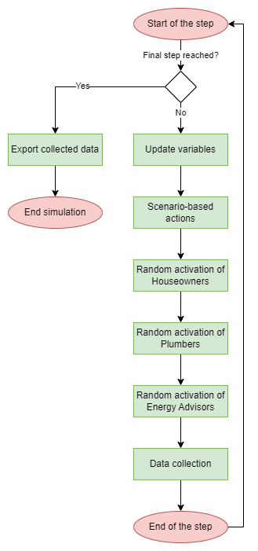
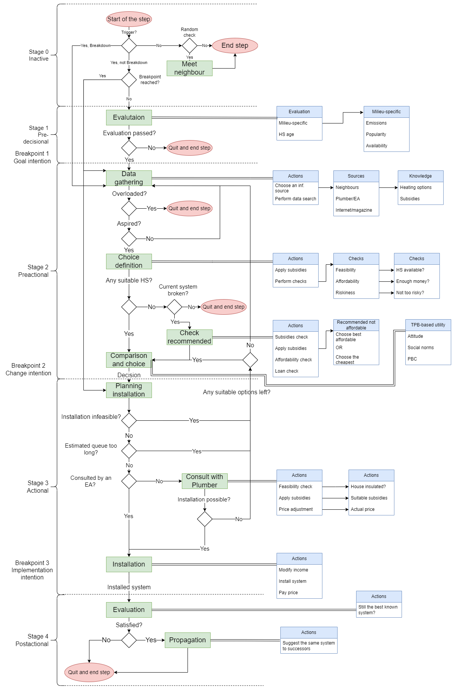

ODD
This section follows the ODD (Overview/Design principles/Details) protocol. See [1] for a motivation and further information.
[1] Grimm, Volker, Railsback, Steven F., Vincenot, Christian E., Berger, Uta, Gallagher, Cara, DeAngelis, Donald L., Edmonds, Bruce, Ge, Jiaqi, Giske, Jarl, Groeneveld, Jürgen, Johnston, Alice S.A., Milles, Alexander, Nabe-Nielsen, Jacob, Polhill, J. Gareth, Radchuk, Viktoriia, Rohwäder, Marie-Sophie, Stillman, Richard A., Thiele, Jan C. and Ayllón, Daniel (2020) ‘The ODD Protocol for Describing Agent-Based and Other Simulation Models: A Second Update to Improve Clarity, Replication, and Structural Realism’. Journal of Artificial Societies and Social Simulation 23 (2) 7 http://jasss.soc.surrey.ac.uk/23/2/7.html. doi: 10.18564/jasss.4259
1. Purpose and Patterns
AHOIS (Agent-based Homeowner decisions on Heating System replacement) model simulates the decision-making processes of homeowners when replacing residential heating systems. The primary purpose is to understand how the aggregation of these individual choices influences broader, system-wide outcomes such as technology diffusion rates, overall energy demand, and carbon emissions over time.
To achieve this, the model investigates how homeowner decisions are driven by a combination of factors:
Personal financial situations, risk perceptions, and individual preferences of homeowners.
Building properties (e.g. area, energy demand, heat load).
External stimuli such as policy interventions, available information and infrastructure.
Social networks and peer influence.
AHOIS serves as a virtual laboratory to explore the effects of different scenarios. It is designed to assess the effectiveness of various policy interventions and communication strategies aimed at accelerating the transition towards sustainable residential heating systems.
The model is expected to produce the following patterns:
An aggregate annual heating turnover rate observed in the German residential heating stock to match the tempo of technological replacement.
A characteristic S-shaped diffusion curve of technology adoption.
The emergence of spatial/network clusters representing the social influence.
The time agents spend in each stage of the decision-making should match that found in the empirical works.
2. Entities, state variables, scales
The following tables contain state variables of the main entities in the Model.
Houseowner agents represent the private house owners that use their houses for the living (i.e. they are not tenants or landlords).
Click here to expand the full table of Houseowner state variables.
Variable Name |
Type and unit |
Scale |
Meaning |
Name in code |
|---|---|---|---|---|
Active Trigger |
Trigger (Object) |
Nominal |
The event that initiated the current decision-making process. |
active_trigger |
Aspiration Value |
Integer (options) |
Ratio |
The number of options an agent needs to feel satisfied with their information search. |
aspiration_value |
Attribute Ratings |
Dictionary |
Interval |
Accumulated satisfaction scores for each system parameter. |
attribute_ratings |
Budget Limit |
Float |
Ratio |
The maximum amount the agent is willing or able to invest in a heating system. |
budget_limit |
Cognitive Overload Threshold |
Float |
Ratio |
The threshold at which the agent experiences cognitive overload. |
overload_value |
Cognitive Resource |
Integer (points) |
Ratio |
The amount of effort the agent can allocate to decision-making in a step. |
cognitive_resource |
Comprehensive Metrics |
Dictionary |
Ratio |
Attribute-wise evaluations of heating systems. |
comprehensive_metrics |
Consultation Ordered |
Boolean |
Nominal |
A flag indicating if a consultation has been ordered. |
consultation_ordered |
Consulted by Advisor |
Boolean |
Nominal |
A flag indicating if the agent has been consulted by an energy advisor. |
consulted_by_energy_advisor |
CRS |
String |
Nominal |
The coordinate reference system for the agent’s geometry. |
crs |
Current Breakpoint |
String |
Nominal |
The specific point within a stage the agent is at. |
current_breakpoint |
Current Stage |
String |
Nominal |
The agent’s current stage in the decision-making process (e.g., “Awareness”). |
current_stage |
Desired Heating System |
Heating system (Object) |
Nominal |
The heating system the agent currently desires to install. |
desired_hs |
Energy Advisor |
EnergyAdvisor (Object) |
Nominal |
A reference to the assigned energy advisor agent. |
energy_advisor |
Geometry |
Shapely Polygon |
Spatial |
The geographic location of the agent, used for social network generation. |
geometry |
Heating Preferences |
Heating preferences (Object) |
Nominal |
The agent’s specific preferences for different heating system attributes. |
heating_preferences |
Heating System Budget |
Float |
Ratio |
The amount of money the houseowner has available to spend on a heating system. |
hs_budget |
House |
House (Object) |
Nominal |
The House agent associated with the houseowner. |
house |
Income |
Integer |
Ratio |
The amount of income the agent receives at each step, added to the budget. |
income |
Infeasible Systems |
List of Strings |
Nominal |
Heating systems that are technically not feasible for the agent’s house. |
infeasible |
Installation Ordered |
Boolean |
Nominal |
A flag indicating if a system installation has been ordered. |
installation_ordered |
Installed Once |
Boolean |
Nominal |
A flag indicating if the agent has replaced their system at least once. |
installed_once |
Known Heating Systems |
List of Objects |
Nominal |
Heating systems the agent is aware of. |
known_hs |
Known Subsidies |
Dictionary |
Nominal |
Maps heating systems to subsidies the agent is aware of. |
known_subsidies_by_hs |
Loan Taking Willingness |
Boolean |
Nominal |
Indicates if the agent would consider taking a loan for a new system. |
loan_taking |
Milieu |
Milieu (Object) |
Nominal |
The agent’s socio-cognitive profile, containing preferences and weights. |
milieu_data |
Milieu Type |
String |
Nominal |
The name of the specific socio-cognitive profile (e.g., “Mainstream”). |
milieu_type |
Neighbours’ Satisfaction |
Dictionary |
Interval |
A dictionary mapping neighbours to their satisfaction with their heating systems. |
neighbours_satisfaction |
Neighbours’ Systems |
Dictionary |
Nominal |
A dictionary of known heating systems installed by neighbours. |
neighbours_systems |
Perceived Uncertainty |
Dictionary |
Ratio |
The agent’s perceived uncertainty for different heating system technologies. |
perceived_uncertainty |
Personal Standard |
Personal standard (Object) |
Nominal |
Thresholds defining which heating systems are personally acceptable to the agent. |
standard |
Plumber |
Plumber (Object) |
Nominal |
The identifier for the plumber agent assigned for consultation or installation. |
plumber |
RA Exposure |
Dictionary |
Ratio |
Exposure values to other milieus, used for the relative agreement model. |
ra_exposure |
Recommended Heating System |
Heating system (Object) |
Nominal |
A system recommended by an intermediary like a plumber or advisor. |
recommended_hs |
Risk Tolerance |
Float |
Ratio |
A value representing how risk-tolerant the agent is. |
risk_tolerance |
Satisfaction |
String |
Nominal |
The agent’s satisfaction level with their current heating system. |
satisfaction |
Source Preferences |
Information source preferences (Object) |
Nominal |
The agent’s preferences for different types of information sources. |
source_preferences |
Stage History |
String |
Nominal |
A record of all decision-making stages the agent has passed through. |
stage_history |
Subsidy Curiosity |
Boolean |
Nominal |
Indicates if the agent is actively interested in learning about subsidies. |
subsidy_curious |
Suitable Heating Systems |
List of Objects |
Nominal |
A subset of known systems that meet the agent’s personal standard. |
suitable_hs |
TPB Evaluation Factors |
Dictionary |
Interval |
Collects values related to TPB factors for data reporting. |
evaluation_factors |
TPB Weights |
Tuple of Floats |
Interval |
Weights for Theory of Planned Behaviour components (attitude, social norm, PBC). |
tpb_weights |
Trigger to Report |
Trigger (Object) |
Nominal |
The trigger instance that will be reported to the data collector. |
trigger_to_report |
Unique ID |
String |
Nominal |
A unique identifier for the agent. |
unique_id |
Unqualified Plumbers |
List of Strings |
Nominal |
A list of plumbers the agent will not contact again. |
unqualified_plumbers |
Visited Neighbours |
Set |
Nominal |
A set of neighbours the agent has already contacted for information. |
visited_neighbours |
Waiting Time |
Integer (steps) |
Ratio |
A counter for how long the agent has been waiting for an installation. |
waiting |
Weekly Expenses |
Float |
Ratio |
The combined weekly operational and fuel costs. |
weekly_expenses |
Plumber agents represent the intermediaries whose main task is to install new systems. They can also provide some knowledge to Houseowners about heatign system attributes and existing subsidies.
Click here to expand the full table of Plumber state variables.
Variable Name |
Type and unit |
Scale |
Meaning |
Name in code |
|---|---|---|---|---|
Active Jobs |
Dictionary |
Nominal |
A dictionary of jobs the plumber is currently performing. |
active_jobs |
Active Jobs Counter |
Integer |
Ratio |
The current number of active jobs. |
active_jobs_counter |
Active Trigger |
Trigger (Object) |
Nominal |
The event that initiated an agent’s decision-making process. |
active_trigger |
Aspiration Value |
Integer |
Ratio |
An agent’s threshold for feeling satisfied with an information search. |
aspiration_value |
Clients’ Systems |
Dictionary |
Nominal |
A record of heating systems installed for previous clients. |
clients_systems |
Cognitive Resource |
Integer (points) |
Ratio |
The amount of effort an agent can allocate to decision-making. |
cognitive_resource |
Completed Jobs |
Dictionary |
Nominal |
A record of jobs that the plumber has completed. |
completed_jobs |
Consultation Power |
Integer |
Ratio |
The plumber’s capacity to process consultation jobs per step. |
consultation_power |
Current Breakpoint |
String |
Nominal |
An agent’s specific point within a decision-making stage. |
current_breakpoint |
Current Heating |
Heating system (Object) |
Nominal |
The heating system currently in use. |
current_heating |
Current Stage |
String |
Nominal |
An agent’s current stage in the decision-making process. |
current_stage |
Desired Heating System |
Heating system (Object) |
Nominal |
The heating system an agent currently desires to install. |
desired_hs |
Heating Preferences |
Heating preferences (Object) |
Nominal |
The preferences and weights used by the plumber to evaluate heating systems. |
heating_preferences |
Heating System Budget |
Float |
Ratio |
The amount of money an agent has available for a heating system. |
hs_budget |
Infeasible Systems |
List of Strings |
Nominal |
A list of heating systems the plumber has identified as technically infeasible for a client. |
infeasible |
Installation Power |
Integer |
Ratio |
The plumber’s capacity to process installation jobs per step. |
installation_power |
Known Heating Systems |
List of Objects |
Nominal |
A list of heating systems the plumber is knowledgeable about and can install. |
known_hs |
Known Subsidies |
List of Objects |
Nominal |
A list of financial subsidies the plumber is aware of. |
known_subsidies |
Known Subsidies by HS |
Dictionary |
Nominal |
Known subsidies, organized by the heating systems they apply to. |
known_subsidies_by_hs |
Max Concurrent Jobs |
Integer |
Ratio |
The maximum number of jobs the plumber can handle simultaneously. |
max_concurrent_jobs |
Offered Services |
List of Objects |
Nominal |
A list of services the plumber offers (e.g., Consultation, Installation). |
Services |
Personal Standard |
Personal standard (Object) |
Nominal |
An agent’s personal thresholds for decision-making. |
standard |
Satisfaction |
String |
Nominal |
An agent’s satisfaction level with their current heating system. |
satisfaction |
Steps Since Training |
Integer (steps) |
Ratio |
The number of simulation steps that have passed since the plumber’s last training. |
steps_after_training |
Suitable Heating Systems |
List of Objects |
Nominal |
A subset of known systems that meet an agent’s personal standard. |
suitable_hs |
Unique ID |
Integer |
Nominal |
A unique identifier for the agent. |
unique_id |
EnergyAdvisor agents main goal is to consult Houseowners and provide knowledge. They provide the most precise knowledge tailored to the parameters of the houses. They also share knowledge about and apply subsidies.
Click here to expand the full table of EnergyAdvisor state variables.
Variable Name |
Type and unit |
Scale |
Meaning |
Name in code |
|---|---|---|---|---|
Active Jobs |
Dictionary |
Nominal |
A dictionary of jobs the advisor is currently performing. |
active_jobs |
Active Jobs Counter |
Integer |
Ratio |
The current number of active jobs. |
active_jobs_counter |
Completed Jobs |
Dictionary |
Nominal |
A record of jobs that the advisor has completed. |
completed_jobs |
Evaluation Parameters |
List of Strings |
Nominal |
The list of attributes the advisor considers when evaluating a heating system. |
hs_evaluation_params |
Heating Preferences |
Heating preferences (Object) |
Nominal |
The preferences and weights used by the advisor to evaluate heating systems. |
heating_preferences |
Infeasible Systems |
List of Strings |
Nominal |
A list of heating system names that the advisor considers technically infeasible. |
infeasible |
Known Heating Systems |
List of Objects |
Nominal |
A list of heating systems the advisor is knowledgeable about. |
known_hs |
Known Subsidies |
List of Objects |
Nominal |
A list of financial subsidies the advisor is aware of. |
known_subsidies |
Known Subsidies by HS |
Dictionary |
Nominal |
Known subsidies, organized by the heating systems they apply to. |
known_subsidies_by_hs |
Max Concurrent Jobs |
Integer |
Ratio |
The maximum number of jobs the advisor can handle simultaneously. |
max_concurrent_jobs |
Offered Services |
List of Objects |
Nominal |
A list of service objects (e.g., Consultation) the advisor offers. |
Services |
Perceived Uncertainty |
Dictionary |
Ratio |
A mapping of heating system types to the advisor’s perceived uncertainty values. |
perceived_uncertainty |
Steps Since Training |
Integer (steps) |
Ratio |
The number of simulation steps that have passed since the advisor’s last training. |
steps_after_training |
Unique ID |
Integer |
Nominal |
A unique identifier for the agent. |
unique_id |
House represent houses of Houseowners. They are treated like agents in the Model due to MESA-GEO limitations. They do not perform any active actions, but store coordinates, geometry, current owner, currently installed system, age of construction, living area, energy demand and heat load.
Click here to expand the full table of House state variables.
Variable Name |
Type and unit |
Scale |
Meaning |
Name in code |
|---|---|---|---|---|
Area |
Float ($m^2$) |
Ratio |
The living area of the house in square meters. |
area |
Construction Year |
Integer (year) |
Interval |
The year the house was built. |
year |
CRS |
String / pyproj.CRS |
Nominal |
The coordinate reference system of the geometry. |
crs |
Current Heating |
Heating system (Object) |
Nominal |
The heating system currently installed in the house. |
current_heating |
Energy Demand |
Float ($kWh/sq.m/year$) |
Ratio |
The annual energy demand for heating per squared meter. |
energy_demand |
Geometry |
Shapely Polygon |
Spatial |
A polygon representing the house’s geographical footprint. |
geometry |
Heat Load |
Float ($kW$) |
Ratio |
The heating load of the house. |
heat_load |
Houseowner |
Houseowner (Agent) |
Nominal |
The agent who owns and lives in the house. |
houseowner |
Milieu |
Milieu (Enum/Object) |
Nominal |
The socio-economic milieu associated with the house’s owner. |
milieu |
Subarea |
String |
Nominal |
The name of the geographical subarea where the house is located. |
subarea |
Unique ID |
Integer |
Nominal |
A unique identifier for the house. |
unique_id |
Heating_system represent heating technologies circulating in the Model. If it is in a house, then it represents an actual physical system installed, if it is stored in an agent’s knowledge it represents their knowledge and expectations about this heating technology, i.e. its attributes might differ from those of an installed system.
Click here to expand the full table of Heating_system state variables.
Variable Name |
Type and unit |
Scale |
Meaning |
Name in code |
|---|---|---|---|---|
Availability |
Boolean / Object |
Nominal |
The availability status of the heating system technology. |
availability |
Breakdown Status |
Boolean |
Nominal |
A flag indicating if the system has broken down (True) or not (False). |
breakdown |
Fuel Price Contract Term |
Integer (years) |
Ratio |
The duration of the contract for the fuel price. |
fuel_price_contract_term |
Heat Delivery Contract |
Object |
Nominal |
Represents the contract for heat delivery (e.g., for district heating). |
heat_delivery_contract |
Loan |
Float |
Ratio |
The amount of loan taken for the investment. |
loan |
Parameters Table |
Pandas Series |
Nominal |
The row from the main parameters table corresponding to the system type. |
table |
Payback Period |
Float (years) |
Ratio |
The calculated payback time for the investment. |
payback |
Power |
Float (kW) |
Ratio |
The power output of the heating system. |
power |
Rating Parameters |
Dictionary |
Ratio |
Core parameters (e.g., cost, emissions), each with a point value and an uncertainty. |
params |
Remaining Investment |
Float |
Ratio |
The remaining investment cost to be paid back. |
investment |
Riskiness |
Float |
Ratio |
A calculated score [0, 1] representing the perceived riskiness of installation. |
riskiness |
Subsidy Status |
Boolean |
Nominal |
A flag indicating if the investment was subsidised. |
subsidised |
System Age |
Integer (weeks) |
Ratio |
The number of weeks since the system was installed. |
age |
Total Energy Demand |
Float (kWh) |
Ratio |
The house- and system-specific total energy demand. |
total_energy_demand |
TPB: Attitude Rating |
Float |
Interval |
An agent’s calculated attitude (rating) towards this system. |
rating |
TPB: Neighbours’ Opinions |
Dictionary |
Nominal |
A collection of opinions from neighbouring agents about the system. |
neighbours_opinions |
TPB: Perceived Behavioural Control |
Float |
Interval |
The agent’s perception of their ability to install and operate the system. |
behavioural_control |
TPB: Social Norm |
Float |
Interval |
The perceived social pressure or norm regarding the system. |
social_norm |
Uncertainty Factors |
Dictionary |
Nominal |
A mapping of heating system types to their associated uncertainty factors. |
uncertainty_factors |
Unique ID |
UUID |
Nominal |
A unique identifier for the system instance. |
unique_id |
Information_source represents various channels of information that agents might want to choose to obtain information about heating technologies. The specific type of information source defines which actions agents must perform to obtain knowledge. Information sources are not the same as agents, i.e. the define Houseowner actions, but they are not themselves Plumbers or Energy Advisors.
Click here to expand the full table of Information_source state variables.
Variable Name |
Type and unit |
Scale |
Meaning |
Name in code |
|---|---|---|---|---|
Distortion Factor |
Float (unitless) |
Ratio |
The base factor used for distorting a heating system’s true parameters. |
distortion |
Information Content |
List of Strings |
Nominal |
A list of heating system names that this source can provide information on. |
content |
Known Subsidies |
Dictionary |
Nominal |
Stores information about subsidies for specific heating systems known by this source. |
known_subsidies_by_hs |
Search Cost |
Integer (cognitive points) |
Ratio |
The cognitive resource cost for an agent to perform one search action. |
cost |
System Skewedness |
Dictionary |
Interval |
The inherent positive or negative bias of the source towards specific heating system types. |
system_skewedness |
Uncertainty Lower Bound |
Float (unitless) |
Ratio |
The lower bound for the uncertainty range applied to parameters. |
uncertainty_lower |
Uncertainty Upper Bound |
Float (unitless) |
Ratio |
The upper bound for the uncertainty range applied to parameters. |
uncertainty_upper |
3. Process Overview and Scheduling
Main processes
Triggering.
Houseownersmay experience Triggers, such as system breakdowns or neighbour influence, prompting them to initiate the decision-making process.Houseowner decision-making.
Houseownersfollow a multi-stage decision-making process regarding their heating systems. Fot the detailed description see the respective sections in Submodels.At the beginning of the simulation every
Houseowneris at the Stage 0, i.e. is not participating in any decision-making, but can still occasionally meet other agents for a brief talk.If they are triggered, they enter the Stage 1 of the decision-making. During this stage,
Houseownersevaluate their satisfaction with their current heating system.If they are satisfied, no further actions are taken. If dissatisfied, they enter Stage 2. This stage includes three subsequent actions:
Data gathering adds more options to their knowledge
Filtering formulates a list of subjectively suitable options according to feasibility, affordability and riskiness
Comparison allows to choose the desired system via attribute-wise comparison.
If
Houseownersare not overwhelmed by options and have at least one suitable system that they desire, they proceed to Stage 3. They schedule a consultation with aPlumberabout the installation of the chosen systems. The rest of this stage is performed by thePlumber. The installation may fail for different reasons (see Heating system installation), and then theHouseownerstry to choose an alternative or leave the decision-making.If the desired system is installed, the
Houseonwersenter the Stage 4 - assessment. They compare the actual performance of their newHeating Systemand check, whether the system is still the best among those known to them. If it is, they become satisfied, if not - they become dissatisfied. Satisfaction defines whetherHouseownerswould try to propagate their decision to otherHouseowners, in case this system type is relatively new to the district.
Intermediary consultation. Both classes of intermediaries can consult
Houseowners.Plumberscan adviseHouseownerson two matters:First,
Plumbersoffer consultations regarding the availableHeating systems, their attributes, andSubsidies. They can recommendHeating systemsbased on the evaluation of these systems, and their feasibility. Their consultations are based on heating attribute values averaged across the entire district, and recommendations consider their own preferences.Second,
Plumbersevaluate the feasibility of installation of the desiredHeating systemsand the final installation price. If the desired systems are not feasible or the final installation costs more than theHouseownerscan afford, theHouseownersare forced to reconsider.
EnergyAdvisorsprovide one type of consultations - about heating system options and subsidies, but their consultations are tailored to the characteristics of the houses and preferences ofHouseowners, i.e. they are much more precise.EnergyAdvisorsmake recommendations, but also define the list of suitable options forHouseownerssuch that they do not have to do it on their own.
Heating system installation.
Houseownersorder an installation of the desiredHeating systemfrom theirPlumbers. ThePlumbersgenerate new instances of the desiredHeating systemsand replace the existing systems in theHouseswith the newly generated ones. After that they subtract the installation price from the budget of theHouseowners, and adjust their weekly expenses according to the attributes of the newHeating systems.Houseonwer interactions.
Houseownersinteract with each other either when they are not in the decision-making, or when they are gathering information. Both types of interactions lead to information and opinion exchange. The difference is the amount of contacts - for the former it is one contact per week maximum, for the latter it depends on the cognitive resources of Houseowners.Scenario-defined impacts.
Scenariosmay have specific impacts affecting the entireModelor only some agents during model runs. Several examples:Information campaign that spreads knowledge about systems among agents;
Changes in availability of heating technologies;
Energy price increase.
Scheduling
The time is discrete, each step represents one week in real life.
State variables can be separated into two groups by how they are updated - those that are updated at the beginning of the step, and those that are updated during the step.
Actions on fixed schedule are the following -
ScenarioandModelrelated actions, i.e. updates in model-level variables, global events that represent changes in the environment. These update state variables at the beginning of the step.Actions on random schedule are the agents’ actions representing real-life uncertainty and simultaneity of human actions. These update state variables during the step. The exact time depends on the order of actions of agents at that step.
Each step starts with the
Modelupdating global variables (Heating SystemandSubsidiesavailability, heat delivery contract terms, emissions fromHeating Systems, energy prices). Then scenario-defined impacts happen. After that agents are activated. TheRandomActivationByTypescheduler divides the agents into groups and activates them in a random order within their group during each time step. The order of activation for groups is pre-defined -Houseowners,Plumbers,Energy Advisors. Then theModelcollects data.
{kind=link}

Figure 1: The scheduling of agent activation and model processes.
The simulation ends when the amount of steps reaches a pre-defined threshold.
4. Design Concepts
Basic Principles
Bamberg’s stage model of self-regulated behavioural change (SSBC). The SSBC (https://doi.org/10.1016/j.jenvp.2013.01.002) frames the decision-making of
Houseowners. According to SSBC, the decision-making process consists of four stages. Each stage has its unique aims, sub-processes and conditions of transfer to other stages or of abandoning the decision-making entirely. The implementation inAHOISis an adaptation of the theory in an effort to map the same decision-making patterns to a new context. The author has already used it for the adoption of electric vehicles to prove the usability of SSBC (https://doi.org/10.1016/j.jenvp.2012.10.001).Houseownersstart at the Stage 1 after they encounter a trigger, and then try to sequentially move to the next stages. However, it is possible for them to go backwards, leave the decision-making entirely, and then re-enter it, both starting completely anew or at a later stage. The outcome depends on the events happening during the decision-making.Stage 1: Predecisional aims to define whether
Houseownersare still satisfied with their currentHeating system.Stage 2: Preactional is dedicated to the data gathering, option filtering and the choice of a single desired option.
Stage 3: Actional revolves around the planning and installation of the desired heating system.
Stage 4: Postactional has a goal to evaluate satisfaction with the newly installed
Heating systemand propagate its technology among peers.
Triggering. Decision-making is triggered by events with different requirements to occur.
Ajzen’s Theory of Planned Behaviour (TPB). The three factors of the Theory of Planned Behaviour (https://doi.org/10.1016/0749-5978(91)90020-T) are used by agents to evaluate options and make a choice.
Attitude corresponds to the individual preferences of agents tied to the characteristics of heating systems.
Subjective norm corresponds to the opinions of contacted agents about heting systems and the popularity of a certain heating technology among houseowners.
Perceived behavioural control corresponds to the perceptions of financial burden laid by the installation and maintenance of each option.
The theory is integrated into the second stage of Bamberg’s SSBC to represent reasoning behind the system evaluations.
Sinus Milieus. Each Houseowner is assigned to one of four Milieu Groups (Leading, Mainstream, Traditionals, Hedonists), which aggregate the Sinus Milieus (https://doi.org/10.1007/978-3-658-42380-3). The Milieu Groups define all socio-economic and psychological variables of
Houseowners; the structure of the network, to which they belong; and some of their behaviour during the decision-making.Satisficing, cognitive overload and decision fatigue. Each
Houseownerhas a limited stock of abstractcognitive resourcefor each step (rouglhy representing the amount of time they can spend on the decision-making), which they must spend on actions during decision-making. The stock size depends on the milieu group. The action cost depends on the action.Houseownerstry to gather information untill they either reach theaspirationlevel or theoverloadthreshold. Theaspirationlevel is reached when they find options during the information search that are better than their currentHeating systems. Theoverloadhappens when theHouseownersfind systems that are the same or worse according to their estimations than their current heating systems. Each such system adds to theoverloadlevel. When a certain level is reached, they drop the decision-making. The decision fatigue happens whenHouseownershave to choose among twoHeating systemsthat are too similar according to their estimations. When this happens, they have to spend additionalcognitive resourceto make the choice, and the best system will be defined randomly among these two.Imperfect information.
Houseownersdo not posess precise values ofHeating systems'characteristics. They have expected values formed byInformations sources(Internet and Magazine sources provide information with a random bias (distortion), neighbours share their knowledge,Plumbersshare averaged values). These values have uncertainty boundaries, which are defined and changed during data gathering, information exchange and installation. Moreover,Houseownershave to contact otherHouseownersin order to obtain information about their installed heating systems, how satisfied they are with them, and also their opinions about all known heating systems. This knowledge is only updated if the same Houseowners are contacted again.Plumbersalso posess imperfect information, but theirs cannot be changed. Its imperfection is represented via averaged values ofHeating systems'characteristics to represent broader expertise, with lack of tailored consultation. The only characteristic that they always know precisely tailored to the installation case is the installation price.EnergyAdvisorsare the only agents that always have perfect knowledge tailored to the specific consultation case.Bounded rationality. AHOIS incorporate bounded rationality proposed by Herbert A. Simon (https://doi.org/10.1007/978-1-349-20568-4_5).
Houweownerscannot have and analyse all the knowledge to make the best possible decision. They are intended to choose the best system to their estimation, but this estimation is limited by incomplete and distorted knowledge, limitedcognitive resource,aspiration, cognitiveoverload,risk tolerance, and decision fatigue.Risk tolerance. Each
Houseonwerhas its unique value ofrisk tolerance, which they use to filter out options before they make the final choice.Budget constraints and loans. Each
Houseonwerhas its uniquebudget, which is defined by a multiplier of their weeklysavings(e.g. 2 years of savings). They consider theirbudgetduring decision-making and filter out options that are not affordable before making the choice. They can take loans to cover the difference between thebudgetand the price of installation. SomeHouseownersare loan avoidant and do not take loans if not absolutely necessary (e.g. the currentHeating systemis broken).Priority of empirical grounding. For each model variable and parameter, there was an effort to find a representation in empirical literature, own surveys, workshops or technical data. For those without such justification, values were defined based on theories or sensitivity analysis. For each variable, a note stating the validation source is provided in the Input Data table Input Data table.
Emergence
Emergent phenomena arise from the individual decisions and interactions of Houseowners, Plumbers, and EnergyAdvisors within the Model.
The adoption pattern of different heating systems within the population emerge as a result of individual decisions of
Houseowners.The interactions between
Houseownerscontribute to emergent localised clusters of adoptedHeating systems. If aHouseownerobserves a neighbour adopting a newHeating system, this may trigger social pressure, motivating theHouseownerto consider replacement.Over time, the
Modelmay show the emergence of technology lock-in, where certainHeating systemsdominate the market due to early adoption patterns, social influence, or economic incentives. This can lead to market saturation, where alternative technologies struggle to gain traction even if they offer superior performance.
Adaptation
Adaptation refers to how agents modify their behaviour and decision-making processes in response to changes in their environment, internal states, or interactions with other agents.
Houseowner Adaptation.
Houseownersadapt their decision-making based on several factors. External triggers causeHouseownersto reassess their situation and adapt their behaviour by speeding up or delaying their decision-making.Houseownersadapt to new information they receive. Their perception of heating systems evolves as they gather more data, which influences their choice of suitable and desired systems.Houseownersadapt their actions based on theircognitive resources, which limit the number of decisions they can make in each time step.Houseownerslearn from their neighbours’ experiences and opinions. Through interactions with nearbyHouseowners, they gather information about the performance and satisfaction associated with differentHeating systems.
Plumber Adaptation.
Plumbersadapt their knowledge base over time, learning about newHeating systemsthrough training. They expand their service offerings as they acquire expertise in installing and consulting on new heating technologies.Energy Advisor Adaptation. Based on
Houseownerpreferences and financial situations,EnergzAdvisorsadapt their recommendations to align with the suitability and feasibility of differentHeating systems.
Objectives
HouseownerObjectives:The primary objective of
Houseownersis to ensure that theirHeating systemsatisfies them. WhenHouseownersbecome dissatisfied, their objective shifts toward identifying and installing a satisfactory replacement system.Houseownersaim to stay under their financial constraints. This involves seeking systems that are within theirbudget, consideringSubsidiesorLoans.Houseownersdiffer in their degree ofrisk tolerance. They may filter out systems they deem to risky during options consideration.Houseownersprioritize systems that have the best score according to their preferences.Houseownersconsider the opinions and decisions of their social peers.
PlumberObjectives:Plumbersaim to provide consultation and installation services toHouseowners. Their objective is to successfully complete consultations and installations within the constraints of their workload.Plumbersseek to expand their knowledge of differentHeating systemsthrough training, enabling them to offer a wider range of services.
EnergyAdvisorObjectives:EnergyAdvisorsaim to recommendHeating systemsthat align withHouseowners'preferences, budgets, and the latest available subsidies.EnergyAdvisorsseek to share their expertise onHeating systems. Their objective is to helpHouseownersunderstand the long-term advantages of different systems.
Learning
There is no learning in AHOIS at the moment.
Prediction
Agents make decisions based on limited information and cognitive resources, which means their ability to predict future outcomes is constrained.
Houseownersattempt to predict the financial impacts of their heating system choices. When evaluating different systems, they estimate future operating expenses and potential savings from more energy-efficient technologies. These predictions are based on information provided byInformation sources, though they are subject to imperfect information. Specifically,Houseownerspredict their yearly expenses based on the current prices, and they try to calculate how this change will affect their savings, i.e. whether they would increase or decrease, and by how much, considering the abovementioned predictions and their limitations.
Sensing
The information agents can sense or perceive is limited by their cognitive capacities, the availability of Information sources, and their choices of Information sources. Specifically, to sense anything about a neighbour, a Houseowner must contact that neighbour. The knowledge about this neighbour will not be updated untill the next meeting. Houseowners cannot conctact every Information sources at once, so they make choices based on their preferences, and obtain as much information as their cognitive resource allows.
HouseownerSensing:Houseownersare aware of their neighbours within their social network.Houseownersare fully aware of the attributes of their currentHeating system.Houseownershave complete information about their ownsavingsandbudget.Houseownerscan sense external triggers, such as heating system breakdowns or price shocks.Houseownerscan sense and gather information from variousInformation sources. This includes the technical feasibility of installing differentHeating systems, system characteristics, and the availability ofSubsidies. The amount of this sensed information is limited by theHouseowner'scognitive resources and the extent of the advice they seek.Houseownerscan sense theHeating systemsadopted by their social network partners through social interactions. They can also observe their neighbours’ satisfaction with these systems, and their opinion about them.
PlumberSensing:Plumbersare aware of the technical feasibility of installing variousHeating systemsin differentHouses.Plumberssense their current workload, including the length of their consultation and installation queues.
EnergyAdvisorSensing:EnergyAdvisorare fully aware of the currentSubsidiesavailable for differentHeating systems.EnergyAdvisorcan sense the financial constraints and preferences ofHouseownersduring consultations. This information enables them to recommend systems that align withHouseownerbudgetswhile maximizing potential cost savings throughSubsidies.EnergyAdvisorare aware of the technical specifications and performance of differentHeating systems, allowing them to evaluate which systems are most suitable forHouseownersbased the properties of theirHouses.
Interaction
Agents interact through consultations and service provisions, and through social influence and information exchange.
Social Interaction and Networks
Social Networks: Each
Houseowneris part of a social network consisting of directed links representing information and influence flow. Partners are initialised based on milieu-specific affiliation preferences and spatial proximity, e.g. some Milieu groups prefer more local connections and vice versa.Social Influence:
Houseownersstore information about their neighbours’ opinions, installed systems, and satisfaction. This affects decision-making during filtering and evaluation. Social interaction can also cause triggers - when oneHouseownerfinds out that their interlocutor has installed a newHeating systemor when oneHouseownerdecides to propagate a newly obtained technology among its peers.Relative Agreement: Knowledge exchange is implemented via the Relative Agreement algorithm (https://jasss.soc.surrey.ac.uk/5/4/1.html).
Houseownersposess knowledge about heating system characteristics with uncertainty ranges attached. Whenever twoHouseownersinteract and both have their own knowledge about the same heating technology, this two piece of knowledge interact. Depending on the distance between values of the same characteristic and the uncertainty range, each piece of knowledge may change.Houseowner-Houseowner: Interactions occur weekly (passive) or during active search (see Houseowner interactions). Weekly meeting is stochastic and based on the researched probability to meet neighbours. Active search meetings depend on the individual preferences of agent towards neighbours as a source of knowledge.
Houseowner-Environment:
Houseownerscan interact with external triggers like price shocks.Houseownerscan interact with theirHousesto sense the attribute values of the currently installedHeating systems.
Service Interaction
Houseowner-Plumber:
Houseownersinteract withPlumbersthrough consultations. When aHouseownerrequires advice on replacing theirHeating system, they can consult aPlumber. During the consultation, thePlumberprovides information about availableHeating systems, assesses the technical feasibility of installing specific systems, and offers recommendations based on their general experience.Once a
Houseownerdecides on aHeating system,Plumbersprovide installation services. The interaction involves scheduling the installation, and completing the work.Plumbersmanage their workload and can interact with multipleHouseownerssimultaneously, prioritizing installations based on their queues.
Houseowner-Energy Advisor:
Houseowners consult with energy advisors to learn about available
SubsidiesforHeating systemreplacements.EnergyAdvisorsprovide advice on which systems qualify forSubsidies.EnergyAdvisorsshare their knowledge of system performance, energy efficiency, and environmental benefits withHouseowners.
Stochasticity
Stochasticity is incorporated into various aspects of Model initialization, agent behaviour, interactions,
and environmental events to simulate the unpredictable nature of human choices, external triggers, and market conditions.
There are two main stochastic parts in the Model – one related to the model initialisation,
and the one related to the processes happening during a model run.
The most influential random processes are:
Model Initialisation:
Heating system distribution: Distributes heating systems from a list of possible systems with a given probability for each and milieu-specific limitations for newer technologies.
Heating system lifetime generation: Draws the lifetime of a heating system whenever it is generated from a Weibull distribution, truncated from the bottom.
Generation of preferences towards heating system attributes: Draws preferences from a Beta distribution parameterized by our own survey.
Run-time Dynamics:
Found heating technology during search: Defines which heating technology will be found during information search in the Internet or Magazine.
Partner choice: Defines which neighbours will be contacted during information search.
Information bias: Defines the size and the direction of the bias introduced into heating system parameters during the search in Internet or Magazine.
For the full list of random processes see the table below.
Click here to expand the full table of stochastic processes.
RNG |
File |
Function |
Process |
Algorithm |
Annotation |
|---|---|---|---|---|---|
model_init |
Model.py |
Prototype_Model.__init__ |
Defines Houseowner’s readiness to take loans |
PCG64 |
Binary decision |
model_init |
Model.py |
Prototype_Model.generate_heating_system |
Chooses a heating system class to generate next |
PCG64 |
List of systems |
model_init |
Model.py |
Prototype_Model.generate_clipped_age |
Generates the age of a generated heating system |
PCG64 |
Clipped normal distribution |
model_init |
Model.py |
Prototype_Model.distribute_heating_systems |
Shuffles houses eligible for heat pump installation during initialisation |
PCG64 |
List of houses |
model_init |
Model.py |
Prototype_Model.distribute_heating_systems |
Shuffles houses eligible for ssytems other than heat pumps installation during initialisation |
PCG64 |
List of houses |
model_init |
Model.py |
Prototype_Model.define_income |
Generates the income of an agent |
PCG64 |
Clipped normal distribution |
model_init |
Model.py |
Prototype_Model.define_risk_tolerance |
Generates the risk tolerance of an agent |
PCG64 |
Beta distribution |
model_run |
Scenario.py |
information_campaign |
Chooses a Houseowner to add knowledge during “Direct informing” campaign |
PCG64 |
List of Houseowners |
model_run |
Scenario.py |
information_campaign |
Chooses a Houseowner to consult during “Energy_advisor” campaign |
PCG64 |
List of Houseowners |
model_run |
Scenario.py |
information_campaign |
Chooses an EnergyAdvisor to perform a consultation during “Risk_targeting” campaign |
PCG64 |
List of EnergyAdvisors |
model_run |
Scenario.py |
information_campaign |
Chooses a Houseowner to mitigate risk during “Risk_targeting” campaign |
PCG64 |
List of Houseowners |
model_run |
Model.py |
Prototype_Model.update_ownership |
Chooses a Milieu for a newly generated Houseowner during relocation |
PCG64 |
List of Milieus |
house_init |
House.py |
House.generate_energy_demand_distribution |
Generates the area of a House |
PCG64 |
Backup method |
house_init |
House.py |
House.generate_area_distribution |
Generates the energy demand of a House |
PCG64 |
Backup method |
houseowner_run |
Houseowner.py |
Houseowner.step |
Defines whether a Houseowner will contact another agent when idle |
PCG64 |
Binary decision |
houseowner_run |
Houseowner.py |
Houseowner.get_data |
Chooses an information source during search |
PCG64 |
List of information sources |
houseowner_run |
Houseowner.py |
Houseowner.compare_hs |
Defines the final desired system if there are two system with close ratings |
PCG64 |
List of heating systems |
houseowner_run |
Houseowner.py |
Houseowner.meet_agent |
Chooses a neighbour in the network to meet when idle |
PCG64 |
List of network neighbours |
houseowner_run |
Houseowner.py |
Houseowner.ask_neighbours |
Shuffles the list of network predecessors to before asking |
PCG64 |
List of network predecessors |
houseowner_run |
Houseowner.py |
Houseowner.share_decision |
Shuffles the list of network sucessors to before propagating |
PCG64 |
List of network sucessors |
houseowner_run |
Houseowner.py |
Houseowner.share_decision |
Defines uncertainty values during information exchange with sucessors |
PCG64 |
Uniform distribution |
houseowner_run |
Houseowner.py |
Houseowner.share_decision |
Chooses a specific successor from the network |
PCG64 |
List of network sucessors |
houseowner_run |
Houseowner.py |
Houseowner.share_knowledge |
Defines uncertainty values during information exchange with neighbours |
PCG64 |
Uniform distribution |
houseowner_run |
Houseowner.py |
Houseowner.find_plumber |
Chooses a plumber from the list of plumbers |
PCG64 |
List of Plumbers |
houseowner_run |
Houseowner.py |
Houseowner.find_plumber_with_desired_hs |
Chooses an energy advisor from the list of plumbers |
PCG64 |
List of Plumbers |
houseowner_run |
Houseowner.py |
Houseowner.find_energy_advisor |
Chooses a plumber from the list of energy advisors |
PCG64 |
List of EnergyAdvisors |
plumber_run |
Plumber.py |
Plumber.__init__ |
Defines uncertainty values for plumber knowledge during initialisation |
PCG64 |
Uniform distribution |
plumber_run |
Plumber.py |
Plumber.training |
Chooses a random system to train about if the training is not specialised |
PCG64 |
List of heating systems |
plumber_run |
Plumber.py |
Plumber.training |
Defines uncertainty values for plumber knowledge during training |
PCG64 |
Uniform distribution |
milieu_init |
Agent_properties.py |
Milieu.generate_TPB_weights |
Defines the attitude importance for the heating system evaluation |
PCG64 |
Uniform distribution |
milieu_init |
Agent_properties.py |
Milieu.generate_TPB_weights |
Defines the social norm importance for the heating system evaluation |
PCG64 |
Uniform distribution |
milieu_init |
Agent_properties.py |
Milieu.generate_TPB_weights |
Defines the perceived behavioural control importance for the heating system evaluation |
PCG64 |
Uniform distribution |
milieu_init |
Agent_properties.py |
Milieu.generate_preferences |
Generate a preference value |
PCG64 |
Beta distribution |
milieu_init |
Agent_properties.py |
Information_source_preferences.__init__ |
Generates information sources preferences |
PCG64 |
Dirichlet distribution |
heating_init |
Heating_systems.py |
Heating_system.generate_lifetime |
Generate the total lifetime of a heating system |
PCG64 |
Integers is main, Weibull is outommented |
information_source_run |
Information_sources.py |
Information_source.data_search |
Chooses a heating system to return to a Houseowner calling get_data |
PCG64 |
List of heating systems |
information_source_run |
Information_sources.py |
Information_source.data_search |
Defines deviation of the perceived heating system values from their true values for a Houseowner calling get_data |
PCG64 |
Uniform distribution |
information_source_run |
Information_sources.py |
Information_source.data_search |
Defines uncertainty values of the attributes of a heating system for a Houseowner calling get_data |
PCG64 |
Uniform distribution |
information_source_run |
Information_sources.py |
generate_imperfect_system |
Defines deviation of the perceived heating system values from their true values for the generated system |
PCG64 |
Uniform distribution |
information_source_run |
Information_sources.py |
generate_imperfect_system |
Defines uncertainty values of the attributes of a heating system for the generated system |
PCG64 |
Uniform distribution |
Collectives
The Model does not represent explicit collective agents.
Observation
The Model collects data at every time step using the MESA framework’s DataCollector module. Data collection is split into model-level aggregates, agent-level states, and specific interaction logs.
- Model-level data:
The
Modeltracks the aggregate state of the system to analyse technology diffusion and environmental impact. Key metrics include:Environmental & Economic: total
Emissions, meanEnergy demand, and meanTotal expenses(LCOH).Technology Diffusion: the
Heating distributionacross all system types, counts ofReplacementsand technologyChanges, and the number ofSubsidised houses.Decision-Making Process: counters for
Triggers(total and by type),Information source calls, andDrop-outs.Financial flows: total volume of
Subsidiespaid andLoanstaken, and totalHouseowner spending.Intervention tracking:
Scenario fulfilment(progress towards targets) andKnown subsidies/Known heating systems(knowledge diffusion).Process Dynamics:
Stage flows(movement of agents between decision stages),Obstaclesencountered per technology, andCognitive resourceusage.
- Agent-level data:
For each agent (primarily
Houseowners), the model records detailed attributes to reconstruct individual trajectories:State & Identity: agent
Class,Milieu,House area, and currentHeating system.Psychological: current
Satisfaction,Preferences,Attribute ratings, andSatisfied_ratio.Decision Status: current
Stage,Decision History, activeTrigger, and remainingCognitive resource.Financial:
Budget,Weekly expenses,Opex, and computedSuboptimalityof their choice.
- Interaction Logs:
Specific tables are maintained to track the intermediary market:
Completed Intermediary Jobs: Logs every completed services by
PlumbersandEnergyAdvisors.Intermediary Queue Length: Tracks the workload and bottlenecks of
PlumbersandEnergy Advisors.
- Output:
At the end of a simulation run, the collected data is exported to Pickle (.pkl) and CSV (.csv) files. Optionally, the spatial state of agents can be exported as a Shapefile (.shp) for geospatial analysis.
5. Initialisation
Model Initialisation
The model initialises information sources as a list of available sources - Internet, Magazine, Neighbours, Plumbers, Energy Advisors. The latter three are not the actual agents, but rather abstractly represent options of data gathering, from which Houseowners will be able to choose.
The model initialises the spatial environment by reading a geoJSON file that contains geospatial data about the houses.
Houses are created using the MESA-GEO framework’s AgentCreator tool, which generates house agents from the geospatial data.
Each house is assigned geospatial coordinates, along with attributes of area, year of construction, energy demand, Milieu code, heat load.
Each house is assigned to a specific milieu group, using a mapping function based on Milieu codes.
The model distributes different heating systems among the houses based on a probabilistic approach. Each house is assigned a heating system according to a custom distribution defined by the model’s parameters.
For each house, the model initialises a Houseowner agent.
After all Houseowners are initialised, they are added to the social network. Their network connections depend on the spatial proximity and milieus. The model uses SHoBNetPy as a network generator.
The model initialises the intermediaries - Plumbers and Energy Advisors.
The model initialises the selected scenario and performs its set-up.
The model’s DataCollector is initialised to track key metrics throughout the simulation.
Scenarios
A Scenario is a set of additional rules applied to the default model state. These rules are separated into 3 groups:
Target state defines the desired heating technologies and their market shares (e.g. 100% of heat pumps). These are used to analyse the achievement of the district planning goal.
Rules altering the initial set-up. For example, they might change knowledge distribution or available subsidies.
Rules that change the model state during the runs. For example, it might define an information campaign during a run.
A Scenario might contain only some of the rules, i.e. only alter the set-up.
Houseowners Initialisation
Each agent is initialised with a unique set of state variables that define its identity, socio-demographic context, psychological profile, and initial state within the decision-making process.
Each agent is assigned a unique_id and linked to a specific house object, which provides its geographical geometry and coordinate reference system (crs). The latter are used by the network generator.
A crucial part of the agent’s identity is its milieu group, a composite object that encapsulates a cluster of socio-psychological attributes, including income, preferences and behavioral tendencies based on empirical data. The following is derived form the milieu group:
Preferences: heating system preferences (installation cost, fuel cost, operating expenses, installation effort, operational effort, emissions) and information source preferences (Internet, magazine, neighbours, plumbers, energy advisors) are derived directly from the agent’s assigned milieu.
Cognitive Resources: each agent starts with an initial_cognitive_resource, representing the mental effort available for decision-making tasks, an aspiration_value, which sets the threshold for how much information is needed to feel satisfied, and an overload_value, which defines how many options that are inferior to the currently installed technology an agent must find before they feel overloaded.
Behavioral Theories: Weights for the Theory of Planned Behavior (tpb_weights) and exposure levels for the Relative Agreement model (ra_exposure) are also initialized from the milieu.
Perceptions: The perceived_uncertainty associated with different heating technologies is initialized to a set of fixed, default values for all agents.
Agents can be initialized at different points in their decision-making. The current_stage and current_breakpoint are set to “Stage 0” and “None” by default.
The agent’s knowledge base, including known_hs (known heating systems), suitable_hs (systems considered acceptable), and a desired_hs (the single desired system) can be initialised from an empty list or with pre-existing knowledge depending on the model setup.
All other state variables are initialized to a neutral or “zero” state. Lists tracking interactions (e.g., visited_neighbours, unqualified_plumbers) are empty. Boolean flags indicating process steps (e.g., consultation_ordered, installation_ordered) are set to False. Counters like waiting time and stage_counter are set to 0.
Agent data collection attributes are set up last.
Plumbers Initialisation
Each Plumber agent is initialized as a non-spatial intermediary with a distinct knowledge base, service capacity, and job management system.
Each agent is assigned a unique_id and is registered with the main model instance.
Their knowledge base is initialized with a list of known_hs (heating systems) and known_subsidies.
Upon creation, the Plumber immediately performs two key actions to establish their baseline knowledge:
They calculate the performance attributes for each known system based on a standardized “average house” configuration to formulate their general expertise.
They evaluate all known_hs against their personal heating_preferences to form an initial professional opinion on each system.
The Plumber’s operational capacity is set. Consultation_power and installation_power define how many tasks they can process per step. Their job management system (active_jobs, completed_jobs, max_concurrent_jobs) is initialized to a neutral state, ready to accept work from Houseowners.
Key functionalities are established by creating ConsultationService and InstallationService objects, which manage the agent’s interaction queues.
Energy Advisors Initialisation
Each EnergyAdvisor agent is initialized as a non-spatial intermediary focused on providing expert information to Houseowners.
Each agent is assigned a unique_id and registered with the main model instance.
The agent’s knowledge base is its primary attribute and is defined at creation. This includes:
A comprehensive list of known_hs (heating systems) and known_subsidies (financial incentives).
A set of heating_preferences used to evaluate and compare different technologies from an expert standpoint.
Immediately upon initialization, the agent processes its list of subsidies using an _organize_subsidies function. This creates a structured dictionary that maps each known heating system to all of its applicable subsidies, allowing for rapid information retrieval during consultations.
The agent’s core function is established by creating a ConsultationServiceEnergyAdvisor object, which manages its queue of consultation requests from Houseowners.
6. Input Data
The model relies on various external data inputs to initialize agents, houses, and the environment. These data sources provide the parameters necessary for agent decision-making, heating system evaluation, and the simulation of social dynamics and energy use. The inputs are described and grouped to mirror their allocation in the files of the model, one table for a file.
settings.toml contains the biggest share of inputs of the Model. Purely tehcnical ones are omitted in the table below, which contains only those relevant for the model parameterisation.
Click here to expand the full table of input data for settings.toml.
Input Name |
Entity |
Type: Unit |
Default |
Source |
|---|---|---|---|---|
aspiration |
Integer: - |
1 |
Based on Aspiration Theory (e.g. see Stutzer et al. 2023 Placeholder) |
|
budget_limit |
Integer: Weeks of Income |
104 |
Calculated as a savings multiplier, derived from the ratio between the median willingness-to-pay (WTP) and the average annual discretionary savings flow. (see Thermondo for WTP, EUROSTAT for savings rate, and DESTATIS for net household income) |
|
climate_speed |
Float: Rate |
0.2 |
Official data from Federal Office for Economic Affairs and Export Control (BEG). |
|
cognitive_resource |
Integer: Points/step |
Leadings: 5; Mainstream: 3; Traditionals: 4; Hedonists: 2 |
Calculation based on general description of Milieu Groups (see Barth et al. 2023) |
|
district |
Float: Rate |
0.3 |
Official data from Federal Office for Economic Affairs and Export Control (BEG). |
|
efficiency |
Float: Rate |
0.05 |
Official data from Federal Office for Economic Affairs and Export Control (BEG). |
|
GP_Joule |
Float: Rate |
0.3 |
Official data from Federal Office for Economic Affairs and Export Control (BEG). |
|
heat_pump |
Float: Rate |
0.3 |
Official data from Federal Office for Economic Affairs and Export Control (BEG). |
|
heat_pump_brine |
Float: Rate |
0.3 |
Official data from Federal Office for Economic Affairs and Export Control (BEG). |
|
income |
Float: Rate |
0.3 |
Official data from Federal Office for Economic Affairs and Export Control (BEG). |
|
loan_taking_probability |
Float: Probability |
0.32 |
Calculations based on Brzeski et al. 2024 |
|
mean_savings |
Integer: EUR/week |
Leadings: 178; Mainstream: 142; Traditionals: 158; Hedonists: 158 |
Calculated from the results of a survey in the district of interest (see this paper). |
|
meeting_prob |
Float: Probability |
0.57 |
Approximation of the share of Germans that report contacting people from their social network at least once a week based on the report of Drews 2019 |
|
network_local_hot |
Float: Rate |
0.3 |
Official data from Federal Office for Economic Affairs and Export Control (BEG). |
|
number_of_energy_advisors |
Integer: - |
5 |
Assumed value. Low sensitivity. |
|
number_of_plumbers |
Integer: - |
5 |
Defined as a localized service cluster by aggregating the district’s internal capacity with providers from adjacent industrial hubs obtained from Lustfix |
|
overload |
Integer: - |
2 |
Assumed value. Low sensitivity. |
|
ownership_change_probability |
Float: Probability |
1 |
Assumed value. Not used ATM. |
|
pellet |
Float: Rate |
0.3 |
Official data from Federal Office for Economic Affairs and Export Control (BEG). |
|
risk_tolerance |
Float: Abstract [0,1] |
Leadings: 1.0; Mainstream: 0.7; Traditionals: 0.5; Hedonists: 0.6 |
Calculation based on general description of Milieu Groups (see Barth et al. 2023) |
|
risk_tolerance_std |
Float: Abstract |
0.19 |
Calculation based on Sherman and Lindamood 2004 |
|
stdev_savings |
Integer: EUR/week |
Leadings: 66; Mainstream: 62; Traditionals: 69; Hedonists: 58 |
Calculated from the results of a survey in the district of interest (see this paper). |
|
tpb_weights_std |
List: - |
[0.1, 0.1, 0.1] |
Assumed value. |
|
income_lower_bound |
int |
50 |
Assumed from Buergergeld minus food expenses |
|
income_higher_bound |
int |
1000 |
Asssumed to be high enough to afford any possible system |
|
initial_meetings_share |
float |
1.0 |
Assumed that agents contacted their neighbours at least once in the past. |
|
similarity_threshold |
float |
1.1 |
Assumed value. |
|
availability_threshold |
int |
104 |
Assumed value. |
|
transition_width |
float |
0.3 |
Compromise between Bass Diffusion Model (0.1-0.2), and estimations of `Lund P. <https://doi.org/10.1016/j.enpol.2005.07.002 >`_ |
|
k_steep |
int |
6 |
Standard mathematical approximation of 5.89, which represents the exact difference in log-odds required for a logistic curve to transition from a 5% to a 95% activation threshold. |
|
x_mid |
float |
0.25 |
Based on the work of Centola et al. |
|
system_grace_period |
int |
520 |
Value discussed during validation workshop. |
|
monetary_cap |
int |
21000 |
Official data from Federal Office for Economic Affairs and Export Control (BEG). |
|
percentage_cap |
float |
0.7 |
Official data from Federal Office for Economic Affairs and Export Control (BEG). |
milieu_parameters.csv contains inputs related to the psychological aspects of the decision-making of Houseowners. The inputs are divided into Milieu-groups, with “Generalized” being a placeholder Milieu group used for testing and thus no agent is attached to this group by default.
Click here to expand the full table of input data for milieu_parameters.csv.
Input Name |
Entity |
Type: Unit |
Default |
Source |
|---|---|---|---|---|
pref_effort_a |
Float: Abstract |
Generalized: 1.2576; Leading: 1.6; Mainstream: 1.4432; Traditionals: 1.1314; Hedonists: 0.8127 |
Beta parameters fited to the results of a survey in the district of interest (see this paper). |
|
pref_effort_b |
Float: Abstract |
Generalized: 0.1642; Leading: 0.1778; Mainstream: 0.1968; Traditionals: 0.44; Hedonists: 0.0428 |
Beta parameters fited to the results of a survey in the district of interest (see this paper). |
|
pref_fuel_cost_a |
Float: Abstract |
Generalized: 1.0422; Leading: 1.9028; Mainstream: 2.5136; Traditionals: 1.9855; Hedonists: 0.8127 |
Beta parameters fited to the results of a survey in the district of interest (see this paper). |
|
pref_fuel_cost_b |
Float: Abstract |
Generalized: 0.1564; Leading: 0.2114; Mainstream: 0.3107; Traditionals: 0.56; Hedonists: 0.0428 |
Beta parameters fited to the results of a survey in the district of interest (see this paper). |
|
pref_emissions_a |
Float: Abstract |
Generalized: 0.9783; Leading: 1.5897; Mainstream: 1.8605; Traditionals: 0.4519; Hedonists: 0.2822 |
Beta parameters fited to the results of a survey in the district of interest (see this paper). |
|
pref_emissions_b |
Float: Abstract |
Generalized: 0.1925; Leading: 0.3256; Mainstream: 0.5875; Traditionals: 0.3012; Hedonists: 0.0843 |
Beta parameters fited to the results of a survey in the district of interest (see this paper). |
|
pref_price_a |
Float: Abstract |
Generalized: 1.0422; Leading: 1.9028; Mainstream: 2.5136; Traditionals: 1.9855; Hedonists: 0.8127 |
Beta parameters fited to the results of a survey in the district of interest (see this paper). |
|
pref_price_b |
Float: Abstract |
Generalized: 0.1564; Leading: 0.2114; Mainstream: 0.3107; Traditionals: 0.56; Hedonists: 0.0428 |
Beta parameters fited to the results of a survey in the district of interest (see this paper). |
|
pref_source_internet |
Float: Abstract |
Generalized: 1; Leading: 3.37; Mainstream: 1.21; Traditionals: 1.7; Hedonists: 3.45 |
Beta parameters fited to the results of a survey in the district of interest (see this paper). |
|
pref_source_magazine |
Float: Abstract |
Generalized: 1; Leading: 1.76; Mainstream: 1.31; Traditionals: 1.2; Hedonists: 2.18 |
Calculated from the results of a survey in the district of interest (see this paper). |
|
pref_source_plumber |
Float: Abstract |
Generalized: 1; Leading: 2.2; Mainstream: 1.97; Traditionals: 1.9; Hedonists: 2.27 |
Calculated from the results of a survey in the district of interest (see this paper). |
|
pref_source_neighbour |
Float: Abstract |
Generalized: 1; Leading: 2.58; Mainstream: 2.24; Traditionals: 1.8; Hedonists: 2.64 |
Calculated from the results of a survey in the district of interest (see this paper). |
|
pref_source_energy_advisor |
Float: Abstract |
Generalized: 1; Leading: 1.46; Mainstream: 1.33; Traditionals: 1.4; Hedonists: 1.64 |
Calculated from the results of a survey in the district of interest (see this paper). |
|
s_lifetime |
Integer: Weeks |
Generalized: 104; Leading: 208; Mainstream: 156; Traditionals: 104; Hedonists: 0 |
Calibration parameter based on general description of Milieu Groups (see Barth et al. 2023) |
|
tpb_attitude |
Float: Abstract |
Generalized: 1; Leading: 0.8; Mainstream: 0.6; Traditionals: 0.5; Hedonists: 0.9 |
Calibration parameter based on general description of Milieu Groups (see Barth et al. 2023) |
|
tpb_social |
Float: Abstract |
Generalized: 1; Leading: 0.5; Mainstream: 0.7; Traditionals: 0.6; Hedonists: 0.4 |
Calibration parameter based on general description of Milieu Groups (see Barth et al. 2023) |
|
tpb_control |
Float: Abstract |
Generalized: 1; Leading: 0.9; Mainstream: 1; Traditionals: 1; Hedonists: 0.8 |
Calibration parameter based on general description of Milieu Groups (see Barth et al. 2023) |
|
ra_exposure_leading |
Float: Abstract |
Generalized: 1; Leading: 0.74; Mainstream: 0.83; Traditionals: 0.75; Hedonists: 0.78 |
Calculated from the results of a survey in the district of interest (see this paper). |
|
ra_exposure_mainstream |
Float: Abstract |
Generalized: 1; Leading: 0.83; Mainstream: 0.73; Traditionals: 0.76; Hedonists: 0.65 |
Calculated from the results of a survey in the district of interest (see this paper). |
|
ra_exposure_traditionals |
Float: Abstract |
Generalized: 1; Leading: 0.73; Mainstream: 0.83; Traditionals: 0.74; Hedonists: 0.75 |
Calculated from the results of a survey in the district of interest (see this paper). |
|
ra_exposure_hedonists |
Float: Abstract |
Generalized: 1; Leading: 0.83; Mainstream: 0.37; Traditionals: 0.28; Hedonists: 0.8 |
Calculated from the results of a survey in the district of interest (see this paper). |
heating_parameters.csv contains inputs related to the technical characteristics of heating technologies. They are all used for the attribtue calculations during model runs.
Click here to expand the full table of input data for heating_parameters.csv.
Input Name |
Entity |
Type: Unit |
Default |
Source |
|---|---|---|---|---|
Lifetime before breakdown |
Integer: Weeks |
Oil: 936/1144; Gas: 936/1144; Heat Pump: 936/1352; Heat Pump Brine: 1144/1560; Pellet: 1144/1560; District Network: 1352/1872; Local Network: 1144/1560; |
Ranges based on data from The Association of German Engineers (VDI) , validated through Validation Workshop. |
|
Installation Time |
Integer: Weeks |
Oil, Gas, Heat Pump, District Network, Local Network: 1; Heat Pump Brine, Pellet: 2 |
Calculations based on data from The Association of German Engineers (VDI) , validated through Validation Workshop. |
|
Operation Effort |
Integer: Hours/year |
Oil, Gas: 10; Heat Pump, Heat Pump Brine: 5; Pellet: 20; District Network, Local Network: 0 |
Calculations based on data from The Association of German Engineers (VDI) , validated through Validation Workshop. |
|
Fuel Cost |
Float: EUR/kWh |
Oil: 0.1324; Gas: 0.1073; Heat Pump, Heat Pump Brine: 0.1246; Pellet: 0.081; District Network, Local Network: 0.1075 |
Prices for 2025 from the open sources e.g. from DEPV |
|
Emissions |
Integer: gCO2eq/kWh |
Oil: 310; Gas: 240; Heat Pump, Heat Pump Brine: 560; Pellet: 40; District Network, Local Network: 120 |
For general fuel see BAFA, for grid based options see Stadtwerke Kiel |
|
Price |
Float: EUR |
Oil: 1202.6; Gas: 905.26; Heat Pump, Pellet: 2314; Heat Pump Brine: 5576.4; Pellet: 4333.6; District Network, Local Network: 694.4 |
Calculations for decentralized options from EWI, for district and local network see KEA-BW (starting with Technikkatalog etc) |
|
Factor Area |
Float: Abstract |
Oil: -0.536; Gas: -0.518; Heat Pump: -0.58; Heat Pump Brine: -0.66; Pellet: -0.63; District Network, Local Network: -0.51 |
Calculations for decentralized options from EWI, for district and local network see KEA-BW (starting with Technikkatalog etc) |
|
Installation Effort |
Integer: Hours |
Oil: 24; Gas: 30; Heat Pump: 20; Heat Pump Brine, Pellet: 32; District Network, Local Network: 16 |
Calculations based on data from The Association of German Engineers (VDI) , validated through Validation Workshop. |
|
Factor OPEX |
Float: Abstract |
Oil: 0.035; Gas, Pellet: 0.03; Heat Pump: 0.025; Heat Pump Brine, District Network, Local Network: 0.02 |
Calculations for decentralized options from EWI, for district and local network see KEA-BW (starting with Technikkatalog etc) |
|
Factor Energy |
List (String): Abstract |
Varies by system type (see CSV for specific lists) |
Calculations for decentralized options from EWI, for district and local network see KEA-BW (starting with Technikkatalog etc) |
|
Factor Oppendorf |
Float: Abstract |
District Network, Local Network: 1; All Others: 1.004 |
||
Price Index |
Float: Abstract |
All systems: 1.613 |
||
Sidecosts Index |
Float: Abstract |
All systems: 1.15 |
||
Heat Load Price |
Float: EUR |
Oil, Gas: 3304.8; Heat Pump: 3891.5; Heat Pump Brine: 4515.6; Pellet: 4004.9; District Network, Local Network: 2439.4 |
Calculations for decentralized options from EWI, for district and local network see KEA-BW (starting with Technikkatalog etc) |
|
Heat Load Factor |
Float: Abstract |
Oil, Gas: -0.673; Heat Pump: -0.475; Heat Pump Brine: -0.46; Pellet: -0.449; District Network, Local Network: -0.53 |
Calculations for decentralized options from EWI, for district and local network see KEA-BW (starting with Technikkatalog etc) |
|
Heat Load Correction |
Integer: Abstract |
1 (for all systems) |
Calculations for decentralized options from EWI, for district and local network see KEA-BW (starting with Technikkatalog etc) |
|
Age Min/Max/Mean/SD |
Integer/Float: Year |
Oil: 1995/13.37; Gas: 2007/10.74; Heat Pump: 2014/5.24; Heat Pump Brine: 2016/4.31; Pellet: 2015/5.09; District Network, Local Network: 2013/7.91 |
Survey in the district of interest (see this paper). |
heating_params_dynamics.csv contains time series of values that have to be changed during model runs, like fuel price, emissions, etc.
Click here to expand the full table of input data for heating_params_dynamics.csv.
Input Name |
Entity |
Type: Unit |
Default |
Source |
|---|---|---|---|---|
Fuel Cost Dynamics |
Time-series schedule: EUR/kWh |
See the file for the full schedule |
Calculations based on projected CO2 prices from German Environment Agency |
|
Fuel Cost Dynamics |
Time-series schedule: EUR/kWh |
See the file for the full schedule |
Calculations based on projected CO2 prices from German Environment Agency |
|
Fuel Cost Dynamics |
Time-series schedule: EUR/kWh |
See the file for the full schedule |
Calculations based on projected CO2 prices from German Environment Agency |
|
Fuel Cost Dynamics |
Time-series schedule: EUR/kWh |
See the file for the full schedule |
Calculations based on projected CO2 prices from German Environment Agency |
|
Fuel Cost Dynamics |
Time-series schedule: EUR/kWh |
See the file for the full schedule |
Calculations based on projected CO2 prices from German Environment Agency |
|
Fuel Cost Dynamics |
Time-series schedule: EUR/kWh |
See the file for the full schedule |
Calculations based on projected CO2 prices from German Environment Agency |
|
Fuel Cost Dynamics |
Time-series schedule: EUR/kWh |
See the file for the full schedule |
Calculations based on projected CO2 prices from German Environment Agency |
|
Fuel Cost Dynamics |
Time-series schedule: EUR/kWh |
See the file for the full schedule |
Calculations based on projected CO2 prices from German Environment Agency |
|
Emissions Dynamics |
Time-series schedule: gCO2eq/kWh |
See the file for the full schedule |
Calculations based on data from KEA-BW (see Technikkatalog etc) |
|
Emissions Dynamics |
Time-series schedule: gCO2eq/kWh |
See the file for the full schedule |
Calculations based on data from KEA-BW (see Technikkatalog etc) |
|
Emissions Dynamics |
Time-series schedule: gCO2eq/kWh |
See the file for the full schedule |
Calculations based on data from KEA-BW (see Technikkatalog etc) |
|
Emissions Dynamics |
Time-series schedule: gCO2eq/kWh |
See the file for the full schedule |
Calculations based on data from KEA-BW (see Technikkatalog etc) |
7. Submodels
Houseowner decision-making
This submodel describes the core behavioral logic of the agents.Houseowner.Houseowner agent. It follows a structured, multi-stage process for evaluating, choosing, and installing a new heating system. An agent can be in one of two primary modes: an “inactive” state characterized by passive social interaction, or an “active” decision-making state. The transition between stages in the active state is governed by the agent’s cognitive_resource and a series of breakpoints that mark the completion of key milestones.
The entire active decision-making process occurs within a loop that persists as long as the agent has cognitive_resource remaining for the current time step. This means an agent can progress through multiple stages or actions in a single step if the tasks are not cognitively demanding. The loop also persists across time steps, i.e. whenever an agent’s cognitive resource is depleted, they pause the decision-making for the current step and wait for the next step to continue.
Stage 0: Inactive State
This is the default state for agents who are not actively considering a change to their heating system.
Condition for State: An agent is in this state if its
current_stageis “None”, which occurs either at the start of the simulation or after successfully completing (or abandoning) the decision-making cycle.Behavior: Agents in the inactive state may engage in social behavior. With a certain probability each time step, the agent will initiate a meeting with another agent (
agents.Houseowner.Houseowner.meet_agent) to exchange information and opinions. Otherwise, the agent takes no action.
Stage 1: Predecisional
This is the entry point into the active decision-making process, where the agent assesses its current situation.
Trigger: An agent is triggered to enter Stage 1, typically by external factors or internal dissatisfaction accumulating over time. In the model, this is represented by the agent having a
current_stagebut itscurrent_breakpointbeing “None”.Action: The agent executes the
evaluate()submodel (see Heating system evaluation). This involves assessing itssatisfactionwith its current heating system based on various performance and cost metrics.- Outcomes:
Satisfied: If the evaluation results in a “Satisfied” state, the decision-making process terminates immediately. The agent expends the cognitive resource for the evaluation but takes no further action, returning to the inactive state.
Dissatisfied: If the agent is dissatisfied, it forms the intention to change its situation. The model sets the
current_breakpointto “Goal”, advancing the agent to the next stage.
Stage 2: Preactional
Triggered by dissatisfaction, this stage involves a sequence of information processing and deliberation to select a preferred heating system.
Trigger: The agent’s
current_breakpointis “Goal”.- Actions: The agent performs a series of three distinct sub-processes, conditional on having sufficient
cognitive_resourceto proceed from one to the next: Data Gathering (``get_data()``): The agent actively seeks information to learn about new heating system options and update its knowledge on existing ones. This can involve consulting intermediaries or interacting with peers.
Choice Set Formulation (``define_choice()``): The agent filters its expanded list of
known_hsto produce a smaller, more manageablesuitable_hslist. This filtering is based on personal criteria for technical feasibility, affordability (with and without loans), and risk tolerance.Comparison and Selection (``compare_hs()``): The agent performs a detailed comparison of the options within its
suitable_hslist. If this comparison yields a clear winner, that system is chosen as thedesired_hs.
- Actions: The agent performs a series of three distinct sub-processes, conditional on having sufficient
- Outcomes:
Success: If the agent successfully identifies a
desired_hsand still has cognitive resources, itscurrent_breakpointis set to “Behaviour”, advancing it to Stage 3.Failure or Pause: If the agent runs out of cognitive resources, the process pauses and will resume from the same point in the next time step. If the process fails (e.g., no suitable options are found, or no option is clearly superior), the agent may exit the decision cycle and return to the inactive state.
Stage 3: Actional
In this stage, the agent acts on its decision by arranging the installation of its chosen heating system.
Trigger: The agent has a
desired_hsand itscurrent_breakpointis “Behaviour”.Action: The agent executes the
install()submodel. This is a complex, multi-step process that involves finding and scheduling a consultation with a qualifiedPlumber, undergoing final feasibility and affordability checks, and waiting for the installation to be completed. Much of the action in this stage is handled by thePlumberagent.- Outcomes:
Installation Scheduled: If the consultation is successful and all checks pass, an installation is queued. The agent enters a waiting period.
Installation Complete: Once the
Plumbercompletes the job, the agent’scurrent_breakpointis set to “Implementation”, advancing it to the final stage.Failure: If the installation fails at any point (e.g., the plumber deems it infeasible, the final price is unaffordable), the agent may revert to Stage 2 to select an alternative from its
suitable_hslist, or abandon the process entirely.
Stage 4: Postactional
After the new system is installed, the agent assesses the outcome of its decision.
Trigger: The new heating system has been installed, and the agent’s
current_breakpointis “Implementation”.Action: The agent executes the
calculate_satisfaction()submodel. This involves comparing the real-world performance and costs of the new system against the expectations the agent had formed during Stage 2.Outcomes: The agent’s
satisfactionattribute is updated to “Satisfied” or “Dissatisfied”. This new state influences its willingness to recommend its choice to peers in future social interactions. After this final assessment, the active decision-making cycle is complete, and the agent’scurrent_stageis reset, returning it to the inactive state (Stage 0).
The entire decision-making process is represented in the Figure 2 below.
{kind=link}

Figure 2: The decision-making scheme of Houseowners.
Houseowner interactions
Houseowners interact in two distinct ways:
Passive Interaction: This occurs when a Houseowner is not actively in the decision-making process. They may randomly choose to contact one of the other Houseowners in their network and exchange information.
Active Interaction: This happens during Stage 2 of the decision-making process. If the Houseowner chooses “Neighbours” as their information source, they will contact all neighbours with connections pointing towards them (i.e., incoming links) and perform an information exchange.
The information exchange process consists of the following steps:
Sharing Knowledge of New Technologies: The contacted neighbour shares information about technologies and their characteristics, but only for those not already known to the asking Houseowner. This information includes the parameter values and their associated uncertainty. The asking Houseowner then stores each new piece of information.
Updating Knowledge of Known Technologies: For technologies that are familiar to both agents, they perform the relative agreement algorithm to update their mutual understanding. This process is applied to each parameter (e.g., cost, efficiency) of the shared technology.
The algorithm is detailed below:
Let the target agent be \(i\) and the source agent be \(j\). For a given parameter of the technology, their knowledge is represented by an opinion (mean value) and an uncertainty (half the width of the confidence interval).
Target agent’s opinion: \(o_i\)
Target agent’s uncertainty: \(u_i\)
Source agent’s opinion: \(o_j\)
Source agent’s uncertainty: \(u_j\)
The update process for the target agent \(i\) follows these steps:
Calculate the Overlap of Uncertainty Intervals: The model first determines the degree of overlap, \(v\), between the uncertainty intervals of the two agents. The uncertainty interval for an agent \(k\) is defined as \([o_k - u_k, o_k + u_k]\). The overlap is calculated as:
\[v = \min(o_i + u_i, o_j + u_j) - \max(o_i - u_i, o_j - u_j)\]If \(v \le 0\), there is no overlap, and no opinion exchange occurs.
Calculate the Agreement Kernel: If there is an overlap (\(v > 0\)), a dimensionless agreement kernel, \(h\), is calculated. This kernel represents the degree of agreement, normalized by the source agent’s uncertainty. It is defined as the ratio of the overlap length to the total width of the source agent’s uncertainty interval (\(2u_j\)):
\[h = \frac{v}{2u_j}\]The value of \(h\) ranges from 0 (no overlap) to 1.
Update Opinion and Uncertainty: The target agent’s opinion and uncertainty are updated based on the agreement kernel \(h\), the difference in their initial values, and an
exposureparameter, \(\mu\), which acts as a learning rate. The updated values at time \(t+1\) are:\[ \begin{align}\begin{aligned}o_i(t+1) = o_i(t) + \mu \cdot h \cdot (o_j(t) - o_i(t))\\u_i(t+1) = u_i(t) + \mu \cdot h \cdot (u_j(t) - u_i(t))\end{aligned}\end{align} \]This formulation ensures that the agent’s opinion and uncertainty shift towards those of the source, with the magnitude of the shift being proportional to their existing agreement. Finally, to ensure numerical stability, the updated values are floored at a small positive number (\(1 \times 10^{-6}\)).
Sharing Final Ratings: The contacted neighbour shares its final rating for each heating system it know. The asking Houseowner stores these ratings in a dedicated dictionary, mapping them to the technology’s name.
Sharing Installed System: The neighbour shares the name of its currently installed heating system. The asking Houseowner stores this information, linking the neighbour’s unique ID to their installed technology.
Sharing Satisfaction: Finally, the contacted neighbour shares its satisfaction level with its currently installed system. The asking Houseowner stores this, associating the neighbour’s ID and technology type with the satisfaction state.
Triggers
A trigger is a distinct event that happens to a Houseowner and activates their decision-making process, moving them from Stage 0 into Stage 1 or Stage 2, depending on the Trigger type. Different triggers represent different real-world events, have unique conditions to occur, and can have different impacts on the Houseowner’s knowledge and state.
A trigger can only affect an agent who is not already in an active decision-making cycle.
The following triggers are implemented in the model:
Breakdown
Description: A critical failure of the agent’s current heating system. This is an emergency trigger that forces immediate action.
Impact: This trigger bypasses the initial evaluation stage.
Decision Stage: Sends the agent directly to Stage 2 (Goal Formation and Choice).
Lifetime
Description: The agent becomes aware that their current heating system is approaching the end of its expected operational lifetime.
Impact: Prompts a non-urgent re-evaluation of the system.
Decision Stage: Sends the agent to Stage 1 (Evaluation).
Unavailability
Description: The agent learns that their current heating system technology will soon become unavailable for new installations or repairs, prompting them to consider a replacement before being forced to switch.
Impact: Prompts decision-making if an agent’s current system is old according to their preferences (2 years before the guaranteed lifespan expires).
Decision Stage: Sends the agent to Stage 1 (Evaluation).
Price shock
Description: A sudden and significant increase in the price of fuel for the agent’s current heating system, representing a major external economic shock.
Impact: The agent’s perceived
fuel_costfor their current system is multiplied by a scenario-defined factor, making it seem much more expensive.Decision Stage: Sends the agent to Stage 1 (Evaluation).
Fuel price
Description: Represents a general, non-shock-based awareness of changing or volatile fuel prices, prompting the agent to reconsider their heating costs.
Impact: Prompts a re-evaluation of the current system.
Decision Stage: Sends the agent to Stage 1 (Evaluation).
Owner change
Description: Represents the re-evaluation of a home’s heating system that typically occurs when a new owner moves in.
Impact: Prompts a standard re-evaluation of the existing system.
Decision Stage: Sends the agent to Stage 1 (Evaluation).
Neighbour jealousy
Description: A social trigger that occurs when an agent observes a neighbour installing a new, potentially superior, heating system.
Impact: Prompts a social comparison and re-evaluation of the agent’s own system.
Decision Stage: Sends the agent to Stage 1 (Evaluation).
Adoptive comparison
Description: A direct social trigger where a neighbour who has recently installed a new system actively encourages the agent to consider adopting the same technology.
Impact: Prompts a re-evaluation spurred by direct social influence.
Decision Stage: Sends the agent to Stage 1 (Evaluation).
Asked by neighbour
Description: A subtle social trigger where being asked for an opinion by a neighbour who is in the decision-making process causes the agent to reflect on their own heating system.
Impact: Prompts a re-evaluation based on incidental social interaction.
Decision Stage: Sends the agent to Stage 1 (Evaluation).
Information campaign
Description: The agent is targeted by a scenario-defined information campaign promoting one or more specific heating technologies.
Impact: The agent’s knowledge is directly altered. Idealised, low-uncertainty versions of the promoted systems (with subsidies already applied) are added to the agent’s
known_hslist.Decision Stage: Sends the agent to Stage 1 (Evaluation).
Risk targeting campaign
Description: A specialised information campaign designed to alleviate common fears or perceived risks associated with specific, often newer, technologies.
Impact: The agent’s
perceived_uncertaintyfor the targeted heating systems is directly reduced, making them appear less risky.Decision Stage: Sends the agent to Stage 1 (Evaluation).
Consultation
Description: Represents a general nudge from an external campaign or policy that encourages houseowners to seek professional advice, prompting them to think about their heating system.
Impact: Prompts a re-evaluation of the current system.
Decision Stage: Sends the agent to Stage 1 (Evaluation).
Current heating system evaluation
This submodel corresponds to Stage 1 of the Houseowner decision-making process. It is the critical first step that determines whether an agent is content with their current situation or is triggered to actively seek a new heating system. The evaluation is performed by comparing the agent’s current_heating system against a set of personal and milieu-specific standards.
The process unfolds as follows:
Initiation and Pre-condition
The evaluation begins when an agent enters Stage 1 of the decision cycle. The process requires some amount of cognitive_resource; if the agent is “tired” (has insufficient resources), the evaluation is skipped for the current time step.
The Standard Check
The core of the evaluation is a call to the agents.Houseowner.Houseowner.check_standard function, which assesses the agent’s current heating system against a list of criteria. For the system to be considered satisfactory, it must pass all applicable criteria. If even one criterion fails, the entire check fails.
Evaluation Criteria
The criteria are composed of a universal standard that applies to all agents, plus a specific standard that is determined by the agent’s milieu group.
Universal Criterion (Remaining Lifetime) This check applies to all agents, regardless of their milieu. The agent becomes dissatisfied if their current heating system is nearing the end of its operational lifetime. Specifically, the system’s current
agemust be less than its totallifetimeminus a personal tolerance threshold (self.standard.lifetime).Milieu-Specific Criteria In addition to the lifetime check, agents apply a unique standard based on the values of their milieu group:
Leading milieu group (Environmental Performance): These agents prioritize environmental protection. They are only satisfied if their current system has the lowest CO2 emissions among all heating systems they know of (
known_hs). This check is only triggered if the agent has a sufficient budget to realistically consider an upgrade, preventing dissatisfaction when change is not financially viable.Mainstream milieu group (Social Conformity): These agents are strongly influenced by social norms. They are satisfied only if their current heating system is the most popular (or tied for the most popular) type within their immediate social network (
neighbours_systems). Like the Leading milieu group, this check is conditional on the agent having a sufficient budget to act on their dissatisfaction.Traditional milieu group (Risk Aversion): These agents prioritize reliability and avoiding future crises. They become dissatisfied if their heating system enters a “danger zone,” which occurs if two conditions are met simultaneously: 1) the technology is being phased out of the market (less than 2 years of market
availabilityremaining), and 2) the physical unit has less than 4 years ofremaining_lifetime. This reflects a desire to replace the system proactively before it fails and becomes difficult to repair.Hedonist milieu group (Pragmatism): This group has a more pragmatic approach. They do not apply any additional, specific criteria. As long as their system passes the universal remaining lifetime check, they remain satisfied.
Outcome and State Transition
The result of the standard check determines the agent’s next action:
Satisfaction: If the
current_heatingsystem passes all applicable criteria, the agent’s state is set to “Satisfied”. The decision-making process concludes for the time being, and the agent’scurrent_stageis reset to “None”, returning them to the inactive state.Dissatisfaction: If the system fails even one criterion, the agent’s state is set to “Dissatisfied”. This dissatisfaction serves as the trigger for the active decision-making process. The agent’s
current_breakpointis set to “Goal”, and theircurrent_stageis advanced to “Stage 2”, initiating the search for a new heating system.
Information search
This submodel describes the process by which a Houseowner agent actively gathers information about alternative heating systems. It corresponds to the initial part of Stage 2 in the decision-making cycle. The goal is to expand the agent’s knowledge base (known_hs) and form (imperfect) expectations about the attributes of different options.
The search process is governed by the agent’s cognitive resources and personal preferences for different information channels.
Initiation and Pre-conditions The information search begins when an agent enters Stage 2 with an unmet need for information (represented by
aspiration_value > 0) and is not already waiting for a previously scheduled consultation (consultation_ordered = False).Baseline Social Search Before consulting any primary information source, the agent always performs an initial search within their social network by executing the
ask_neighbours()method. This establishes a baseline of socially-derived information.Primary Information Source Selection After the initial neighbor search, the agent chooses one primary information source (see below) to consult for the current time step. This choice is probabilistic, determined by the agent’s milieu-specific preferences (
source_preferences), which act as weights for the selection.Emergency Condition: A special rule applies if the agent’s current heating system is broken. In this emergency scenario, the agent is forced to seek professional help, and the choice of information source is restricted to only a
plumberor anenergy_advisor.
Once a source is chosen, the agent executes that source’s specific data_search() method. The mechanism of the search depends on the type of source selected.
Information sources and mechanisms
There are two primary categories of information sources, each with a distinct search mechanism: impersonal sources that provide distorted information, and intermediary sources that trigger direct agent-to-agent contacts - Houseowner-Houseowner, Houseowner-Plumber, Houseowner-Energy Advisor.
These sources represent channels that provide generic, non-personalized information. They are characterized by the limited scope of their content (e.g., a magazine may only cover a few system types) and the inherent imperfection of the information provided. The search process is iterative:
Iterative Search: The agent repeatedly queries the source in a loop, with each query consuming
cognitive_resource.Information Discovery: In each iteration, the source provides information on one randomly selected heating system from its
content.Perception Modeling: The information received is not perfect. It is shaped by a multi-step perception model to form the agent’s subjective “expectations”:
First, the “true” attributes of the system are calculated for a generic, average house.
A
distortion_factoris then applied to these true values. This factor combines a general distortion level, the source’s specific bias for or against that technology (system_skewedness), and a random element. This creates a perceived central value for each attribute (e.g., price, emissions).Finally, an
uncertaintyrange is assigned to each perceived value, representing the agent’s lack of confidence in the information.
Knowledge Integration:
New System: If the agent learns of a system for the first time, the new perceived version is added to its
known_hslist. The agent then evaluates if this new option is better than their current system. If it is, theiraspiration_valuedecreases (getting closer to their goal). If not, theiroverload_valuedecreases (effort spent for little gain).Known System: If the agent already knew about the system, the new perceived information is integrated with their existing beliefs using a relative agreement mechanism (application/odd:Updating Knowledge of Known Technologies).
Search Termination: The iterative search loop terminates under one of three conditions:
The agent runs out of
cognitive_resource.The agent’s
aspiration_valuereaches zero, indicating they have found a sufficient number of promising alternatives.The agent’s
overload_valuereaches zero, indicating they have processed too much information without finding good options and will abandon the search for now.
These sources represent direct interactions with other agents in the model. Their data_search() methods work differently:
Function: Instead of providing chunks of distorted information, selecting one of these sources acts as a trigger to initiate a consultation or social interaction.
Process: The method is responsible for finding a relevant agent (e.g.,
find_plumber()) and scheduling an interaction (e.g.,order_plumber()). TheNeighbourssource simply calls the agent’s ownask_neighbours()method.Outcome: After scheduling the interaction, the agent’s
cognitive_resourcefor the current time step is immediately depleted. This ends the information search and puts the agent into a passive, waiting state until the consultation or interaction is formally carried out by the other agent in a subsequent step (as described in the “Intermediary Consultation” submodel).
Formulating a list of suitable heating systems
This submodel describes the process by which a Houseowner agent filters its list of known heating systems (known_hs) to produce a shorter choice set of options (suitable_hs) that are deemed suitable for further consideration.
Pre-condition check
Prior Consultation Check: If the agent has already consulted an energy advisor and has a pre-existing list of suitable systems, this filtering process is skipped to avoid re-evaluating the options.
Filtering
If this check passes, the agent iterates through every heating system in its known_hs list and subjects each one to a sequential filtering process. A system must pass all of the following checks in order to be considered suitable:
Technical Feasibility Filter: The system must not be on the agent’s personal list of technically infeasible options (
infeasible). This list may be populated by an energy advisor’s recommendations.Installation Affordability Filter: The agent must be able to afford the installation cost. This is checked in two ways:
Direct Affordability: The system’s price is checked directly against the agent’s dedicated heating system budget (
hs_budget).Loan-Assisted Affordability: If the system is not directly affordable, the agent attempts to find a suitable loan. If a loan is found, affordability is re-checked against the budget plus the loan amount.
Operational Affordability Filter: The ongoing running costs of the new system must be affordable relative to the agent’s income. The model calculates the change in weekly household expenses, which includes:
The difference in fuel and operational costs between the new system and the agent’s current one.
The weekly repayment cost of any new loan taken for the installation.
Any existing financial burdens, such as a loan on the current heating system.
The system is considered affordable only if the agent’s income can cover these changes in expenses.
Risk Tolerance Filter: All systems that pass the feasibility and affordability checks are added to a preliminary list. This list then undergoes a final filtering based on the agent’s risk perception:
First, a perceived risk score is calculated for each system on the list.
The list is sorted from most to least risky.
The agent iteratively removes the most risky system from the list until all remaining options have a risk score at or below the agent’s personal
risk_tolerancethreshold.
Submodel Outcome and Special Conditions
After the filtering process is complete, one of the following outcomes occurs:
Suitable Options Found: If the final
suitable_hslist contains one or more heating systems, the agent successfully forms its choice set and proceeds to the next stage of the decision-making process.No Suitable Options Found (Standard Case): If the
suitable_hslist is empty, the agent abandons the decision-making process for the time being, resetting its aspiration values and depleting its cognitive resources.**No Suitable Options Found (Emergency in case of broken heating):**The agent is forced to reconsider its options, potentially triggering a search for subsidies (by becoming
subsidy_curious) or attempting to secure a loan for a previously recommended system, even if it requires bypassing their normal risk avoidance. If all financing options are exhausted and still no system is affordable, the agent will default to the highest-rated system it can afford, regardless of other preferences.
Heating system evaluation
Once an agent has formulated a choice set of suitable heating systems (suitable_hs), this submodel evaluates each option to produce a final utility score, referred to as the “integral rating”. This evaluation is based on the Theory of Planned Behavior (TPB), which combines three key components to determine behavioural intention: the agent’s personal attitude, the perceived social norm, and the perceived behavioural control.
The evaluation proceeds in the following steps for each system in the suitable_hs list.
Calculating Attitude (Personal Preference) The agent’s attitude represents how personally favourable they find each system. It is calculated by comparing a system’s attributes against the agent’s personal preferences (
heating_preferences). The process is as follows:First, the attributes of all systems known to the agent (not just those in the choice set) are normalized relative to each other. This creates a rescaled attribute score between 0 and 1.
For attributes where lower values are better (e.g., cost, emissions), this score is inverted (1 - normalized value).
The corresponding rescaled attribute scores are then multiplied by the agent’s personal preference weights for each attribute.
Finally, these weighted scores are summed and averaged to produce a single
ratingfor the system, which represents the agent’s overall attitude towards it.
The final
ratingscore is a value between 0 and 1.Calculating Social Norm (Peer Influence) The social norm captures the perceived social pressure and influence from the agent’s network. It is calculated as the average of two distinct factors:
Neighbour Opinion: The average of all known opinions (i.e. attitudes) that the agent’s neighbours have for that specific system.
System Prevalence: The fraction of known neighbours in the agent’s network who have that same type of heating system currently installed.
The final
social_normscore is a value between 0 and 1.Calculating Perceived Behavioural Control (PBC) Perceived Behavioural Control reflects the agent’s confidence in their ability to perform the behaviour (i.e., install the system), primarily based on its affordability. It is calculated as the average of two financial ratios:
Installation Affordability: The ratio of the agent’s heating system budget (
hs_budget) to the system’s installation price, capped at 1. A value of 1 means the agent can fully afford the upfront cost.Operational Affordability: A measure of how the change in running costs (fuel and opex) compares to the agent’s income. If the new system is cheaper or the same price to run, this value is 1. If it is more expensive, the value is reduced proportionally to the new financial burden.
The resulting
behavioural_controlscore is a value between 0 and 1.Calculating the Integral Rating (Final Utility) In the final step, the three calculated TPB components are combined into a single utility score for each system in the choice set. This is a multi-step process:
Relative Normalization: The raw scores for Attitude (
rating),social_norm, andbehavioural_controlare normalized across all options within the choice set. For example, the system with the highest attitude score gets a normalized attitude of 1.Weighting: These newly normalized scores are then multiplied by the agent’s personal TPB weights (
tpb_weights), which define how much the agent cares about personal preference vs. social norms vs. affordability.Summation: The three weighted, normalized scores are summed to produce the final
integral_ratingfor each system.
Submodel Outcome
The output of this submodel is a dictionary mapping each Heating_system instance in the choice set to its final integral rating. This ranked list is then passed to the next submodel to make the final installation decision.
Heating system installation
This submodel describes the installation phase of the decision-making process, where a Houseowner agent, having already selected a desired_hs, proceeds to have it installed. This process is a multi-step interaction between the Houseowner and a Plumber agent.
The process is initiated by the Houseowner agent and unfolds through a series of sequential checks and actions:
Pre-Condition and State Checks: Before taking any action, the agent first evaluates its current state. This step determines whether the agent needs to act, wait, or has already completed the process.
Installation Already Complete: The agent checks if the
desired_hsis already installed by verifying that its age is 0. If so, the process is considered complete. The agent’s state is set to “Stage 4: Implementation”, itswaitingcounter is reset, and relevant model-level obstacle trackers are updated to reflect the successful installation.Agent is Waiting: If the agent has already ordered a consultation (
consultation_ordered == True) or an installation (installation_ordered == True), it takes no new action. Instead, it enters a passive waiting state, incrementing itswaitingcounter.Insufficient Cognitive Resources: The agent must have a minimum amount of
cognitive_resourceto proceed with planning the installation. If its resources are below this threshold, it does nothing in the current timestep.
Internal Feasibility and Plumber Search: This step might happen several times depending on the outcomes of the next steps. If the agent is not waiting and has sufficient resources, it proceeds with the active planning steps.
- Check for Known Infeasibility: The agent first checks if the
desired_hsis on its personal list of infeasible systems (infeasible). This might happen if an agent receives additional information about the system feasibility from their plumber. If the desired system is infeasible: The
desired_hsis reset to “None”.The
desired_hsis removed from the list ofsuitable_hs.If other options remain in the
suitable_hslist, the agent returns to “Stage 2” to re-evaluate options.If no other suitable options exist, the agent abandons the implementation stage and reverts to “Stage 2” to search for new information.
- Check for Known Infeasibility: The agent first checks if the
- Finding a Qualified Plumber: If the system is feasible, and the agent has no plumber yet, the agent tries to find a plumber that is able to install their desired system. If the agent already has a plumber, this plumber might not be qualified, and the check will happen later, in the step 3. If no qualified plumber is found:
The
desired_hsis reset to “None”.The
desired_hsis removed from thesuitable_hslist.If other suitable options remain, the agent returns to “Stage 2” to choose an alternative.
If no options remain, the decision-making process fails for this cycle, and the stage is reset to “Stage 0”.
- Timeline Feasibility Check: After successfully finding a plumber, the agent estimates the total time until installation (queue time + installation duration). If this exceeds (
unacceptable_waitingtime) weeks, the agent considers the delay unacceptable, unless the system was specifically recommended. In case of an unacceptable delay, the
desired_hsis reset.The
desired_hsis removed from thesuitable_hslist.If other suitable options remain, the agent returns to “Stage 2” to choose an alternative.
If no options remain, the decision-making process fails for this cycle, and the stage is reset to “Stage 0”.
- Timeline Feasibility Check: After successfully finding a plumber, the agent estimates the total time until installation (queue time + installation duration). If this exceeds (
- Final Pre-Order Budget Check: Finally, the agent performs a check of their financial capacity.
If the agent’s disposable budget (including any existing loan) is insufficient to cover the price, they attempt to secure a new loan (
find_loan()), explicitly bypassing their usual loan avoidance preference.If the system remains unaffordable after this search, the process fails. The agent resets their state to “None” and abandons the decision entirely (without re-evaluating other suitable options).
Plumber Consultation and Final Verification: If an agent was already consulted by an energy advisor, they go directly to the next step. Once a plumber has been selected and the timeline is acceptable, the
Houseownerorders a consultation. ThePlumberagent then performs its own set of checks.Plumber Qualification Check: The plumber verifies that the requested system is one they are familiar with and can install. If not, they reject the job, and the
Houseowneradds them to a list ofunqualified_plumbersand must restart the planning, potentially trying to find a qualified plumber.Technical Feasibility Assessment: The plumber conducts a technical check. For certain heating systems (e.g., heat pumps), this involves verifying that the house’s energy demand is below a specific threshold stored in (
insulation_threshold) variable. If the house fails this check, the system is declared infeasible. TheHouseowneris notified, adds the system to theirinfeasiblelist. They will reconsider their choice during their next step, when they try to plan installation again.Precise Cost Calculation: If the system is deemed feasible, the plumber calculates the precise, house-specific installation (
price) and operational (opex) costs. These calculated costs replace the agent’s initial, potentially uncertain estimates. The plumber may also apply availablesubsidiesat this stage, if there are any known to them.- Affordability Check: With the precise costs known, the
Houseowneragent performs an affordability check. If the new price is higher than anticipated, and the agent already tried to cover a part of the price woth a loan, the agent will attempt to secure a larger loan (find_loan()) to cover the difference. After that, if the agent can still afford the desired system (with or without a loan) they pass the check sucessfully. If they cannot afford the desired system anymore: The
desired_hsis reset to “None”.The
desired_hsis removed from thesuitable_hslist.If other suitable options remain, the agent returns to “Stage 2” to choose an alternative.
If no options remain, the decision-making process fails for this cycle, and the stage is reset to “Stage 0”.
- Affordability Check: With the precise costs known, the
If the price is equal or lower than that estimated by an agent, they order installation. For the lower price, the agent also adjusts their loan (if there is any).
Ordering and Queuing the Installation: This is the final step before the physical installation.
Successful Order: If the final affordability check passes, the consultation is considered successful. The
Plumberadds the installation job to their work queue. TheHouseowner’s state is updated to reflect that an installation has been ordered (installation_ordered = True), and they enter the passive waiting state described in step 1.Failed Order: If the final affordability check fails even after attempting to secure a loan, the installation cannot proceed. The agent abandons the choice, resets its
desired_hsandsuitable_hs, and reverts to “Stage 2: Goal” to reconsider its options from an earlier point.Direct Installation Order: If the agent has previously consulted an
Energy Advisor(and thus already has precise information), they bypass the general consultation from the plumber and directly order the installation (order_installation). ThePlumberadds the job to their work queue, and the agent enters the passive waiting state.
Physical Installation and State Update: When the
Houseowner’s job reaches the front of thePlumber’s queue, theinstallationis executed by thePlumber.Financial Transaction: The final installation
priceis deducted from theHouseowneragent’shs_budget.System Swap: The
Houseowner’scurrent_heatingobject is replaced with a new object representing the installed system. Key properties from the decision process, such as whether it was subsidised or financed with a loan, are transferred to this new object.Income Adjustment: The agent’s weekly income is permanently modified to reflect the change in operational costs and any new loan repayments.
Final State Change: The
Houseowner’sinstallation_orderedflag is set toFalse, and they are marked as havinginstalled_once. They have now successfully completed the installation process.
Post-installation assessment
This submodel represents the final stage of the Houseowner’s decision-making process, executed after a new heating system has been successfully installed. The primary purpose is for the agent to reflect on the outcome of its decision by comparing the actual performance of the new system against its prior expectations and other known alternatives. This assessment determines the agent’s new satisfaction state, which in turn influences its future social interactions.
The process is executed as follows:
Pre-condition Check The agent must have a sufficient amount of (
cognitive_resource) to perform the assessment. If its resources are below the required threshold, the process is paused and deferred to the next time step.Knowledge Update: Replacing Expectations with Reality To perform a fair assessment, the agent first updates its internal knowledge base. This is a critical step: The agent replaces in its
known_hslist the instance of the chosen heating system (which still holds expected attributes and the rating calculated before the installation) by a copy of itshouse.current_heatingobject. This new instance contains the actual, real-world attributes and performance data of the newly installed system.Re-evaluation of All Known Options With its knowledge base updated, the agent recalculates its personal attitude (
rating) for every system in itsknown_hslist. This ensures that the comparison is based on the agent’s most current perspective. The newly calculated rating for the installed system is considered its final, “true” rating.Choice Optimality Assessment The core of the satisfaction calculation lies in determining if the agent made the best possible choice from the options it had previously considered suitable.
The agent checks its
suitable_hslist, which was formulated during the choice phase (Stage 2).If there were no other alternatives in the
suitable_hslist, the agent could not have made a better choice. Therefore, itssatisfactionis automatically set to “Satisfied”.- In case of multiple options, the agent compares the “true” rating of its newly installed system against the rating of the second-best alternative from that list.
Optimal Choice (Satisfaction): If the installed system’s rating is greater than or equal to the second-best alternative’s, the agent’s choice is confirmed, and its
satisfactionis set to “Satisfied”.Suboptimal Choice (Dissatisfaction): If the rating of the second-best alternative is higher than the rating of the installed system, the agent concludes it made a suboptimal decision and its
satisfactionis set to “Dissatisfied”.
Consequential Actions The agent’s new satisfaction state determines its immediate follow-up actions:
If Satisfied: The agent will attempt to propagate its successful decision by calling the
share_decision()submodel. This allows it to influence its peers. The number of peers it attempts to influence is determined by its remainingcognitive_resource.If Dissatisfied: The agent does not share its decision, preventing the spread of a suboptimal choice.
State Reset and Cycle Conclusion Regardless of the outcome, the agent performs a comprehensive state reset to formally conclude the entire decision-making cycle. This cleanup involves:
Clearing all temporary decision-making lists (
suitable_hs).Resetting choice variables (
desired_hs,recommended_hs).Clearing its memory of interactions from the completed decision-making cycle (e.g.,
visited_neighbours,unqualified_plumbers). This means that when this agents enters the decision-making again (presumable in several years), they will be able to visit the same neighbours they have visited during this cycle, and they will be able to contact the same plumbers they consulted. This assumes that in several years agents might decide that even unqualified plumbers could become qualified, and that neighbours they visited might have some changes in their knowledge, opinions, and currently installed systems.Resetting its list of
infeasiblesystems to the global default.
After this cleanup, the agent’s current_stage and current_breakpoint are reset to “None”, returning it to the inactive state (Stage 0).
Intermediary consultation
Plumber consultation
When a Houseowner consults a Plumber for general advice, the Plumber executes a sequence of actions designed to expand and refine the Houseowner’s knowledge base, ultimately providing a concrete recommendation.
The consultation process consists of the following steps:
Knowledge and Attribute Sharing (``share_knowledge``): The
Plumberfirst updates theHouseowner’s understanding of various heating systems. This is a multi-faceted information transfer:House-Specific Cost Calculation: The
Plumbercalculates the precise installation (price) and operational (opex) costs for every heating system it knows, tailored specifically to theHouseowner’s house characteristics (e.g.,area,heat_load).Updating Existing Knowledge: For heating systems that the
Houseowneralready knows about, thePlumber’s house-specific attribute data is used to influence theHouseowner’s existing beliefs. This is handled via a Relative Agreement mechanism, which adjusts theHouseowner’s (potentially uncertain) parameter estimates to align more closely with thePlumber’s expert assessment.Introducing New Systems: If the
Plumberknows about heating systems that are not in theHouseowner’sknown_hslist, these new systems are added to the list. TheHouseowner’s subjective perception of social opinions for these newly learned systems is initialized as neutral.Sharing Subsidy Information: The
Plumbershares its entire portfolio of known subsidies (known_subsidies_by_hs) with theHouseowner.
Opinion Sharing (``share_rating``): The
Plumbershares its personal professional rating for each heating system it knows. This rating is added to theHouseowner’sneighbours_opinionsdictionary for the corresponding system, treating thePlumberas a trusted source of opinion.Formal Recommendation (``recommend``): The
Plumberprovides a single, formal recommendation. This is determined through a filtering process:First, the
Plumbercreates a list of all systems it can install, sorted by its personalrating.Technical Feasibility Filter: The list is filtered to remove systems that are technically unsuitable for the
Houseowner’s house (e.g., heat pumps in a poorly insulated building, as determined by theinsulation_threshold).Agent Infeasibility Filter: The list is filtered again to remove any systems the
Houseownerhas previously identified as being on their personalinfeasiblelist.The highest-rated system remaining after these filters are applied is then designated as the
Houseowner’srecommended_hs.
Sharing Social Context (``share_systems``): If the corresponding model parameter (
settings.plumber.share_systems) is enabled, thePlumberprovides theHouseownerwith information about which heating systems are installed in the homes of their social network neighbors, but only for those neighbors who are also clients of this specificPlumber. This updates theHouseowner’sneighbours_systemsattribute.
Plumber Consultation Outcome
After all information has been shared and the recommendation has been made, the consultation concludes. The Houseowner’s consultation_ordered flag is set to False, and their aspiration_value is reset to 0. This reset prompts the agent to re-evaluate their goals and options in light of the new, expert information they have just received.
Energy Advisor consultation
The consultation with an Energy Advisor provides the Houseowner with a comprehensive and financially-focused analysis of heating options. The primary goal of this submodel is to transform the advisor’s general knowledge into a concrete, curated list of technically feasible and financially affordable heating systems (suitable_hs) for the agent, completed with a formal recommendation.
The consultation process unfolds as follows:
House-Specific Cost and Subsidy Analysis: The advisor begins by assessing all heating systems within its knowledge base (
known_hs). For each system, it performs two key calculations:Personalised Cost Calculation: It first calculates the precise installation and operational costs based on the specific attributes of the
Houseowner’s house (area,energy_demand,heat_load).- Detailed Subsidy Application: It then meticulously applies all known subsidies for which the system or
Houseowneris eligible. This involves: Checking any specific conditions attached to a subsidy.
Calculating the subsidy amount, typically as a percentage of the installation cost.
Applying a cap to the total subsidy (depends on the the lower of 70% of the price or 21,000 currency units).
Adding a small additional premium (5% of the original price) to the total subsidy amount.
The final, aggregated subsidy is deducted from the system’s installation cost, and the system is marked as
subsidised.
- Detailed Subsidy Application: It then meticulously applies all known subsidies for which the system or
System Evaluation and Ranking: Once the post-subsidy costs are determined, the advisor assigns a quantitative
ratingto each potential heating system. The systems are then sorted in a list from highest to lowest rating, creating a ranked order of preference from the advisor’s perspective.Multi-Stage Filtering and Financial Planning: The advisor filters the ranked list of systems to determine which ones are viable for the
Houseowner. This is a multi-step process:Initial Feasibility Filter: The list is first filtered to exclude any system that the
Houseownerhas previously marked as being on their personalinfeasiblelist.Proactive Loan Assessment: The advisor then iterates through the remaining systems. For any option that is still not affordable with the agent’s dedicated budget (
hs_budget), the advisor prompts the agent to proactively search for a loan (by callingfind_loan()) for that specific system.Final Affordability Filter: A final, definitive filter is applied. Only systems that are affordable—either directly from the agent’s
hs_budgetor with the help of a successfully identified loan—are kept for the final list.
Formulating the Final Recommendations: The systems that pass all filters constitute the final output of the consultation.
Creation of a Suitable Set: All systems that pass the final affordability filter are passed to the
Houseownerto become their newsuitable_hslist. This provides the agent with a pre-vetted choice set.Technical Check for Recommendation: The advisor performs one last technical check on this suitable list, removing options that are incompatible with the house’s insulation level (the
insulation_thresholdcheck).Formal Recommendation: The highest-rated system from this final, technically viable list is formally designated as the
Houseowner’srecommended_hs.
Final Knowledge Transfer: To ensure the
Houseowner’s internal knowledge is up-to-date, the advisor shares its detailed, house-specific attributes and professional ratings for all systems, not just the suitable ones. It also shares the specific subsidy information relevant to the systems in the finalsuitable_hslist.
Energy Advisor Consultation Outcome
The consultation concludes by updating the Houseowner’s state. The agent now possesses a curated list of suitable_hs and a formal recommended_hs. Their aspiration_value is reset to 0 to trigger a re-evaluation based on this new information, and their consultation_ordered and subsidy_curious flags are set to False.
Heating system attribute calculations
This submodel details the set of procedures used to calculate the primary cost and performance attributes of all heating systems in the model. These are not agent-level behaviors but are foundational calculations performed at the beginning of the simulation for each existing system and dynamically during a simulation whenever an intermediary agent (a Plumber or Energy Advisor) provides a house-specific consultation.
The calculations are dependent on the characteristics of the House for which the system is being evaluated, specifically its area \(A_{house}\) (in \(m^2\)), specific energy demand \(E_{specific}`(in :math: `kWh/m^2a\)), and heat load \(L_{heat}\) (in \(kW\)). The master function calculate_all_attributes orchestrates the following sequence of calculations:
1. Final Energy Demand Calculation
Before costs can be determined, the system’s total final energy demand is calculated based on the house’s specific energy demand and the system’s efficiency.
Inputs: House area (\(A_{house}\)), house specific energy demand (\(E_{specific}\)).
- Process:
A system-specific efficiency factor (\(F_{efficiency}\)) is determined. The model uses five predefined energy demand classes (50, 100, 150, 200, 250 \(kWh/m^2a\)) each with a corresponding efficiency factor for the given heating system. The factor corresponding to the class closest to the house’s \(E_{specific}\) is selected.
A
processed_areais calculated using a fixed scaling formula to represent that the building’s heat-transferring surface area depends on the amount of levels of this building:\[A_{processed} = A_{house} \times (2.3 \times 1.5 + 0.75) \times 0.32\]The total final energy demand (\(E_{final}\)) is then computed as:
\[E_{final} = A_{processed} \times E_{specific} \times F_{efficiency}\]
Output: Total final energy demand in \(kWh\) per year.
2. Installation Cost Calculation
The initial installation cost (price) is calculated based on the system type and house characteristics.
Inputs: House area (\(A_{house}\)), house heat load (\(L_{heat}\)).
Process: The calculation follows one of three paths:
Heat Delivery Contract: For systems where the
Houseownerpays for heat as a service (heat_delivery_contract = True), the direct installation cost to the agent is \(0\).Heat Load-Based Cost: For most heating systems (e.g., boilers, heat pumps), the cost is a function of the house’s heat load. The formula uses several system-specific parameters from a lookup table:
\[C_{install} = (P_{base} \times L_{heat}^{F_{load}} \times L_{heat}) \times F_{correction}\]Where \(P_{base}\) is the base price, \(F_{load}\) is a scaling factor for the heat load, and \(F_{correction}\) is an adjustment factor.
Area-Based Cost: For network-based systems (e.g., district heating), the cost is a function of the house’s area. A similar formula applies:
\[C_{install} = (P_{base} \times A_{house}^{F_{area}} \times A_{house} \times F_{oppendorf} \times I_{price} \times I_{sidecosts}) \times F_{correction}\]Where the parameters are system-specific values from a lookup table representing base price, area scaling factor, and various indices. A special case,
Heating_system_electricity, uses a similar area-based formula but without the final correction factor.
3. Operating Cost (OPEX) Calculation
The annual operating and maintenance costs (opex) - excluding fuel costs - are calculated as a fraction of the installation cost.
Inputs: House area (\(A_{house}\)), house heat load (\(L_{heat}\)).
Process:
Standard Systems: For standard, owner-operated systems, the OPEX is a direct fraction of the installation cost:
\[OPEX = C_{install} \times F_{opex}\]Where \(F_{opex}\) is a system-specific factor.
Heat Delivery Contracts: For these systems, the OPEX also includes the amortized installation cost, which is paid off over the system’s lifetime (\(T_{lifetime}; in weeks\)):
\[OPEX = (C_{install} \times F_{opex}) + (52 \times \frac{C_{install}}{T_{lifetime}})\]
4. Fuel Cost Calculation
The annual fuel cost (fuel_cost) is calculated based on the final energy demand.
Input: Total final energy demand (\(E_{final}\)).
Process: This is a direct linear calculation:
\[C_{fuel} = E_{final} \times P_{fuel}\]Where \(P_{fuel}\) is the system-specific price of fuel per \(kWh\).
5. Emissions Calculation
The annual CO2-equivalent emissions (emissions) are also calculated from the final energy demand.
Input: Total final energy demand (\(E_{final}\)).
Process: This is a direct linear calculation:
\[Emissions_{CO2eq} = E_{final} \times F_{emissions}\]Where \(F_{emissions}\) is the system-specific emission factor in grams of CO2-equivalent per \(kWh\).
6. Integration and Financial Metrics
Once these core attributes are calculated, they are used to define key financial metrics for the heating system object:
Investment: The initial investment is set equal to the calculated installation cost (\(C_{install}\)).
Annual Payback: The amount of the investment that is paid back each year over the system’s lifetime (\(T_{lifetime}\)) is calculated as:
\[Payback_{annual} = \frac{C_{install}}{T_{lifetime}}\]Depreciated Value: For existing systems, the model also calculates the remaining value of the investment based on its current age (\(T_{age}\)):
\[Value_{remaining} = C_{install} - (Payback_{annual} \times T_{age})\]
Subsidies and Loans
This submodel describes the financial instruments available to Houseowner agents to reduce the cost burden of a new heating system. It covers the structure and application of subsidies, which lower the initial installation cost, and the process by which agents secure loans to cover remaining costs.
Subsidies
Subsidies are financial grants that directly reduce the installation price of a heating system. They are defined by a flexible structure that allows for a variety of subsidy types, including unconditional grants for specific technologies and conditional bonuses based on agent or system characteristics.
Subsidy Structure
Each subsidy in the model is an object with the following attributes:
heating_system: The specific heating system or group of systems the subsidy applies to.subsidy: The value of the subsidy, represented as a decimal fraction of the system’s installation cost (e.g., 0.3 for a 30% subsidy).condition: An optional logical rule that must be met for the subsidy to be applicable.target: Specifies whether theconditionapplies to theHouseowneragent (e.g., their income) or theHeating_systemitself (e.g., a specific technical property).
The model includes several types of subsidies, such as:
Base Technology Subsidies: Unconditional grants for adopting specific technologies like heat pumps, pellet boilers, or district heating connections.
- Conditional Bonus Subsidies: Additional, stackable grants that are awarded only if certain conditions are met. Examples include:
An “Income Bonus” for households with an annual income below a set threshold.
A “Climate Speed Bonus” for agents who replace an existing oil or gas heating system early.
An “Efficiency Bonus” for installing particularly efficient models of certain technologies.
Application and Calculation Process
Subsidies are calculated and applied by intermediary agents (primarily the Energy Advisor) during a consultation. The process for a given heating system is as follows:
Eligibility Check: The intermediary checks all subsidies associated with the heating system’s type. For each one, it evaluates its
condition(if one exists) against the specifiedtarget(theHouseowneror theHeating_system).Amount Calculation: For every eligible subsidy, the monetary value is calculated as a percentage of the system’s pre-subsidy installation cost.
Aggregation: The values of all eligible subsidies are summed to produce a
total_subsidyamount.Subsidy Capping: The aggregated
total_subsidyis capped to prevent over-subsidization. The final amount cannot exceed the lesser of these two values: 70% of the original installation cost, or 21,000 EUR.Premium Addition: A final “premium,” calculated as 5% of the original installation cost, is added to the capped subsidy amount.
Price Reduction: This final, total subsidy amount is subtracted directly from the heating system’s installation
price.
Loans
Loans provide a mechanism for Houseowner agents to finance an installation when their available budget (hs_budget) is insufficient to cover the post-subsidy price.
Loan Structure and Terms
A Loan object is defined by its principal amount, interest rate, and term, from which repayment values are calculated.
- Loan Amount Determination: When an agent considers a loan, the principal amount is determined by a two-step process:
Required Amount: The amount needed is calculated as:
\[L_{required} = C_{install} - B_{agent}\]Where \(C_{install}\) is the system’s post-subsidy price and \(B_{agent}\) is the agent’s available budget.
Affordable Amount: The agent’s maximum borrowing capacity is determined by a Loan-to-Income (LTI) rule, capped at 5 times their annual income, and a Loan-to-Value (LTV) rule, capped at 100% of the system’s price.
\[L_{affordable} = \min(C_{install}, I_{annual} \times 5)\]Where \(I_{annual}\) is the agent’s annual income.
The final
loan_amountis the minimum of the required and affordable amounts: \(\min(L_{required}, L_{affordable})\).
Repayment Calculation: Using the final
loan_amount, a standard annual interest rate (e.g., 2.21%), and a loan term (in years), the model calculates themonthly_paymentusing the standard loan amortization formula and thetotal_repaymentincluding compound interest.
The Loan-Finding Process
When a Houseowner has insufficient funds to finance a system, they execute the find_loan process, which includes the following steps:
Pre-Condition Checks: The agent will only attempt to find a loan if two conditions are met:
The agent has a general willingness to take on debt (
loan_taking = True), unless this check is explicitly bypassed (e.g., during an emergency).The agent’s expected weekly income after accounting for the changes in fuel and operating costs from the new system is greater than zero.
Initial Attempt: The agent first calculates the terms of a standard 10-year loan.
Loan Term Optimization: If the initial weekly payment is higher than the agent’s expected weekly income, the loan is considered unaffordable. The agent then enters an optimization loop:
It incrementally increases the loan term by one year.
It recalculates the loan terms, resulting in a lower weekly payment.
This process continues until the weekly payment is less than or equal to the agent’s expected weekly income.
Success and Failure Conditions:
Success: If an affordable weekly payment is found, the resulting
Loanobject, with its optimized term, is successfully attached to the heating system being considered.Failure: The search for a loan fails if the optimization loop terminates before finding an affordable payment. This occurs if the required loan term exceeds the heating system’s technical lifetime, in which case no viable loan is found.
Plumber training
The training() submodel expands a Plumbers' knowledge by allowing them to learn about new heating technologies.
Trigger Conditions: Training is triggered dynamically during the simulation run. A plumber will initiate the training process only if two conditions are met simultaneously: * They have not undergone training for more than 52 time steps (e.g., representing one year). * They currently have no active jobs to fulfill.
Upon successfully starting the training and after updating their attributes, their time-since-training counter is reset to zero.
The Process:
When the training is executed, the Plumber follows this sequence:
Knowledge Gap Identification: The
Plumbercompares their internal list of known heating technologies with the global list of all available heating technologies in the model.System Selection: If there are technologies the plumber does not yet know, one is selected to be learned. While a specific system can be forced, the model defaults to choosing one at random from the pool of unknown systems.
Attribute Calculation: The
Plumberlearns the technical details of the new system by simulating its specifications against a standardized, average building profile.Information Uncertainty: For each calculated attribute of the new system, an associated uncertainty bound is generated. This is done by multiplying the base attribute value by a random factor drawn from a uniform distribution (bounded by
uncertainty_loweranduncertainty_upper). This uncertainty value is stored for later use in the relative agreement algorithm during consultations, where it determines the extent to which agents can influence each other’s knowledge.Knowledge Integration: The new
Heating system, complete with its biased parameters, is added to thePlumber'smemory.Re-evaluation: Finally, the
Plumberre-evaluates all theHeating systemsthey know (both old and newly learned) to update their internal rankings and recommendations.
If the Plumber already knows all available heating technologies on the market, the training process is bypassed and no new knowledge is added.